<!doctype html>
<html lang="en">
<head>
  <meta charset="utf-8">
  <meta name="viewport" content="width=device-width, initial-scale=1">
  <title>arxiv digest — 2026-10-24</title>
  <style>
:root {
  --bg: #ffffff;
  --fg: #1f2328;
  --muted: #59636e;
  --border: #d0d7de;
  --card: #f6f8fa;
  --link: #0969da;
}
body {
  max-width: 980px;
  margin: 0 auto;
  padding: 2rem 1rem 5rem;
  font-family: -apple-system, BlinkMacSystemFont, "Segoe UI", Helvetica, Arial, sans-serif;
  line-height: 1.55;
  color: var(--fg);
  background: var(--bg);
}
a { color: var(--link); }
img { max-width: 100%; height: auto; }
pre, code { background: var(--card); border-radius: 6px; }
pre { padding: 1rem; overflow-x: auto; }
blockquote { border-left: 4px solid var(--border); padding-left: 1rem; color: var(--muted); }
details { margin: 0.6rem 0; }
summary { cursor: pointer; font-weight: 600; }
.paper-figures-scroll {
  display: flex;
  gap: 1rem;
  overflow-x: auto;
  overscroll-behavior-x: contain;
  padding: 0.75rem 0.25rem 1rem;
  margin: 1rem 0 1.25rem;
  border-top: 1px solid var(--border);
  border-bottom: 1px solid var(--border);
  scroll-snap-type: x proximity;
}
.paper-figure-card {
  flex: 0 0 min(260px, 72vw);
  scroll-snap-align: start;
  background: var(--card);
  border: 1px solid var(--border);
  border-radius: 12px;
  padding: 0.55rem;
}
.paper-figure-card img {
  display: block;
  width: 100%;
  max-height: 240px;
  object-fit: contain;
  background: white;
  border-radius: 8px;
}
.paper-figure-caption {
  display: block;
  margin-top: 0.5rem;
  color: var(--muted);
  font-size: 0.85rem;
}
.figure-strip-hint {
  color: var(--muted);
  font-size: 0.9rem;
  margin-bottom: -0.3rem;
}
</style>
  <script>
    window.MathJax = {
      tex: {
        inlineMath: [['$', '$'], ['\\(', '\\)']],
        displayMath: [['$$', '$$'], ['\\[', '\\]']],
        processEscapes: true,
        processEnvironments: true
      },
      options: {
        skipHtmlTags: ['script', 'noscript', 'style', 'textarea', 'pre', 'code'],
        ignoreHtmlClass: 'tex2jax_ignore',
        processHtmlClass: 'tex2jax_process'
      }
    };
  </script>
  <script id="MathJax-script" async
    src="https://cdn.jsdelivr.net/npm/mathjax@3/es5/tex-chtml.js"></script>
</head>
<body>
<header style="background-color: #333; color: white; padding: 15px; margin-bottom: 20px;">
  <h1 style="margin: 0; font-size: 24px;">
    <a href="https://ochelpan.github.io/arXiv_clean/" style="color: white; text-decoration: none;">Main</a>
  </h1>
</header>

<h1>Daily arXiv Report</h1>

<hr>
<p>
<a href="index.html">← Index</a>
 · <a href="papers_03.html">← Previous</a> · <a href="papers_05.html">Next →</a>
</p>
<hr>

<h2>Papers 61–80</h2>
<p><a id="paper-2610.31501"></a></p>
<h3 id="one-shot-entanglement-generation-and-distillation-via-petz-recovery-and-binary-hypothesis-testing"><a href="http://arxiv.org/abs/2610.31501v1">One-shot entanglement generation and distillation via Petz recovery and binary hypothesis testing</a></h3>
<p><strong>Authors:</strong> Matthew Can, Mark M. Wilde<br>
<strong>Type:</strong> theory · <strong>Category:</strong> quantum information and computing · <strong>PDF:</strong> <a href="https://arxiv.org/pdf/2610.31501v1">https://arxiv.org/pdf/2610.31501v1</a><br>
<strong>Analysis basis:</strong> full PDF text, analyzed in chunks
<strong>Topic relevance:</strong> <code>quantum measurements</code> <strong>2/5</strong></p>
<div class="figure-strip-hint">↔ Scroll figures horizontally</div>
<div class="paper-figures-scroll">
<figure class="paper-figure-card">
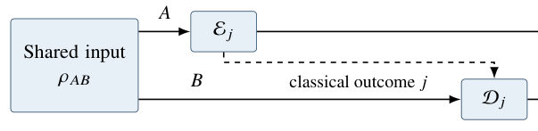
<figcaption class="paper-figure-caption"><b>Fig 1.</b> Figure 1: Three tasks with the same final target Φ𝑚 𝐿b𝐿. Time flows from left to right; the upper output belongs to Alice and the lower output to Bob. Solid arrows carry quantum systems and the dashed arrow carries a classical outcome. In entanglement generation and entanglement transmission, the two initial systems are both local to Alice. Only in entanglement distillation is the input initially shared. The definitions and infidelity criteria appear in Section 2.2.</figcaption>
</figure>
<figure class="paper-figure-card">
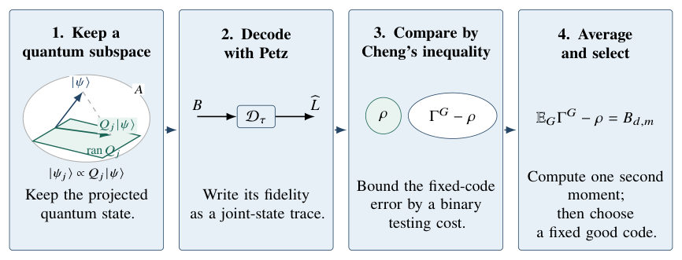
<figcaption class="paper-figure-caption"><b>Fig 2.</b> Figure 2: The main idea of the proof of Theorem 3.1. In the first panel, the plane represents a selected subspace ran 𝑄𝑗of Alice’s space 𝐴. Conditioned on this outcome, the retained state is the normalized, nonzero projection |𝜓𝑗⟩∝𝑄𝑗|𝜓⟩, not a measured basis label. Petz decoding gives an explicit physical recovery. Cheng’s trace inequality is applied before the random code is averaged, so the averaged upper bound on the error depends linearly on a comparison operator instead of an inverse operator. The final binary test need not be implemented by Alice and Bob. Here 𝜌= 𝜌𝐴𝐵and Γ𝐺is the code-dependent comparison operator defined in (3.9). Figure 3 gives a detailed proof guide.</figcaption>
</figure>
<figure class="paper-figure-card">

<figcaption class="paper-figure-caption"><b>Fig 3.</b> Figure 2 summarizes the central proof idea: select a quantum subspace, write the Petz fidelity as a trace, apply Cheng’s trace inequality while the code is fixed, and only then take the Haar average. The detailed proof in Section 3 follows this same order.</figcaption>
</figure>
<figure class="paper-figure-card">
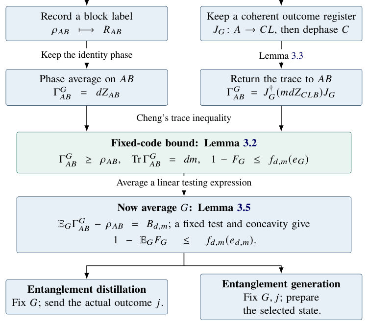
<figcaption class="paper-figure-caption"><b>Fig 4.</b> Figure 3: A guide to the proof, with the two subspace constructions shown separately. The small diagrams illustrate 𝑑= 6, 𝑚= 2 on the left and two cyclic windows for 𝑑= 5, 𝑚= 3 on the right. Each green block on the left is a retained two-dimensional subspace; the bars on the right mark two overlapping three-dimensional subspaces without crossing the basis labels. No individual basis state is measured. Only the right-hand route requires the isometric-embedding inequality. Both routes reach the same fixed-code guarantee and the same Haar average. In the right-hand comparison-operator formula, 𝐽𝐺is tensored with 𝐼𝐵. Here 𝑒𝐺= e(𝜌𝐴𝐵, Γ𝐺 𝐴𝐵−𝜌𝐴𝐵).</figcaption>
</figure>
<figure class="paper-figure-card">
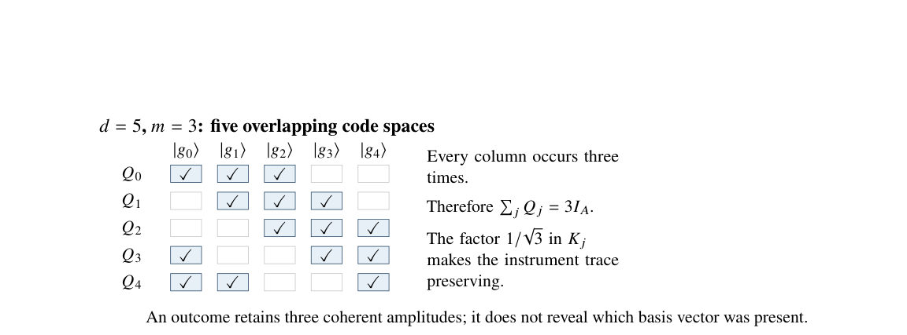
<figcaption class="paper-figure-caption"><b>Fig 5.</b> Figure 4: Cyclic windows remove the divisibility restriction. A marked entry belongs to the indicated subspace. Wrapping the window around the last column gives equal coverage of every basis vector. The measurement outcome identifies a selected subspace, while its output remains a three-dimensional quantum system.</figcaption>
</figure>
</div>

<p><strong>Summary.</strong> This paper develops rigorous theoretical bounds for quantifying entanglement sharing over noisy quantum channels. It achieves this by mapping the problem onto the framework of binary quantum hypothesis testing, utilizing Cheng's trace inequality. The results provide explicit, resource-efficient rates for entanglement generation and transmission, offering a powerful tool for quantum communication theory.</p>
<p><strong>Why it may be interesting.</strong> While focused on abstract QI theory, the rigorous bounding techniques involving error analysis and information measures are foundational for understanding noise resilience in any physical quantum system.</p>
<details>
<summary>Detailed structure</summary>
<p><strong>Main problem.</strong> The paper quantifies the achievable rate of entanglement sharing between distant, noisy laboratories, relating this fundamental resource to the statistical problem of distinguishing between two quantum hypotheses.</p>
<p><strong>Main result.</strong> It establishes direct, explicit bounds for entanglement generation, distillation, and transmission using hypothesis-testing coherent information, providing a clear link between distinguishability and finite-resource quantum communication rates.</p>
<p><strong>Method.</strong> The analysis heavily relies on applying Cheng's trace inequality to bound the infidelity of a Petz decoder, connecting the problem to the cost of binary hypothesis testing over quantum channels.</p>
<p><strong>Model / system.</strong> The study analyzes abstract quantum information tasks: entanglement generation, one-way distillation, and entanglement transmission, modeled using quantum channels and codes.</p>
<p><strong>Key observables.</strong> Infidelity ($\epsilon$), achievable entanglement rate (via hypothesis-testing coherent information), and the binary testing cost $e(X,Y)$.</p>
<p><strong>Important parameters / regimes.</strong> Target dimension ($m$), error tolerance ($\epsilon$), and the number of copies ($n$).</p>
<p><strong>Assumptions / limitations.</strong> The analysis assumes the use of Petz recovery decoders and makes specific mathematical derivations regarding the second moment of random subspaces.</p>
<p><strong>Figures summary.</strong> Figure 1 illustrates the three core tasks (generation, transmission, distillation). Figure 2 summarizes the central proof idea: selecting a subspace, using Petz fidelity as a trace, and applying Cheng's inequality.</p>
<p><strong>Paper structure.</strong> The paper progresses by first relating the entanglement problem to hypothesis testing, deriving one-shot bounds using trace inequalities, and then proving an error-preserving conversion between generation and transmission codes, culminating in asymptotic rate calculations.</p>
</details>
<details>
<summary>Abstract</summary>
<p>How much entanglement can two distant laboratories share when their connection is noisy? We relate this question to deciding which of two quantum hypotheses is present. Our one-shot bounds apply to entanglement generation over a quantum channel and to one-way entanglement distillation from a shared state. We use Cheng's trace inequality to bound the infidelity of a Petz decoder in terms of a binary hypothesis testing cost. Applying the inequality before averaging over codes reduces the error analysis to computing a second moment of random subspaces. The proof covers every integer target dimension and treats rank-deficient states explicitly. A corollary expresses the achievable entanglement through hypothesis-testing coherent information, with a single logarithmic error slack and exact integer rounding. We also prove an error-preserving conversion from entanglement generation codes to entanglement transmission codes: the target dimension decreases by only a constant factor at fixed error, and the decoder is the original decoder followed by local processing. Consequently, for both entanglement generation and entanglement transmission, arbitrary pure reference-input states yield the same coherent-information rate, second-order Gaussian correction at the original error tolerance, and explicit achievable logarithmic remainder. For commuting testing hypotheses, the logarithmic remainder improves to a constant. These results give a direct route from binary distinguishability to explicit recovery guarantees and finite-resource quantum communication rates.</p>
</details>
<p><sub><a href="#top">↑ back to top</a></sub></p>

<p><a id="paper-2610.30279"></a></p>
<h3 id="transversal-syndrome-extraction-a-unifying-construction-for-measuring-the-error-syndromes-of-any-stabilizer-code"><a href="http://arxiv.org/abs/2610.30279v1">Transversal syndrome extraction: A unifying construction for measuring the error syndromes of any stabilizer code</a></h3>
<p><strong>Authors:</strong> Miles D. Gorman<br>
<strong>Type:</strong> theory · <strong>Category:</strong> quantum information and computing · <strong>PDF:</strong> <a href="https://arxiv.org/pdf/2610.30279v1">https://arxiv.org/pdf/2610.30279v1</a><br>
<strong>Analysis basis:</strong> full PDF text, analyzed in chunks
<strong>Topic relevance:</strong> <code>quantum measurements</code> <strong>2/5</strong></p>
<div class="figure-strip-hint">↔ Scroll figures horizontally</div>
<div class="paper-figures-scroll">
<figure class="paper-figure-card">
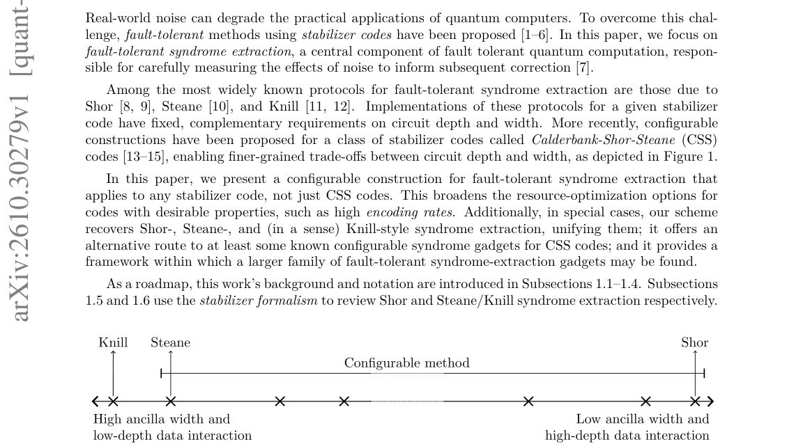
<figcaption class="paper-figure-caption"><b>Fig 1.</b> Figure 1: Schematic comparing resource trade-offs among several syndrome extraction methods. Each point represents a method’s circuit depth and width for a fixed stabilizer code. Adapted from [16].</figcaption>
</figure>
<figure class="paper-figure-card">
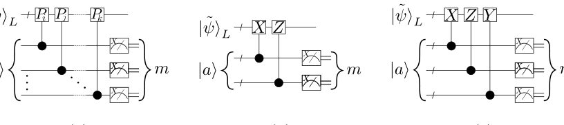
<figcaption class="paper-figure-caption"><b>Fig 2.</b> Figure 2: Circuit diagrams for (a) Shor syndrome extraction; (b) Steane syndrome extraction, Knill syndrome extraction, and our proposed procedure, up to circuit identities, the deletion of certain ancilla qubits, and the choice of ancilla state |ay; and (c) a more general version of our procedure, again up to deleting certain ancilla qubits. In all cases, ˜ψ D</figcaption>
</figure>
<figure class="paper-figure-card">
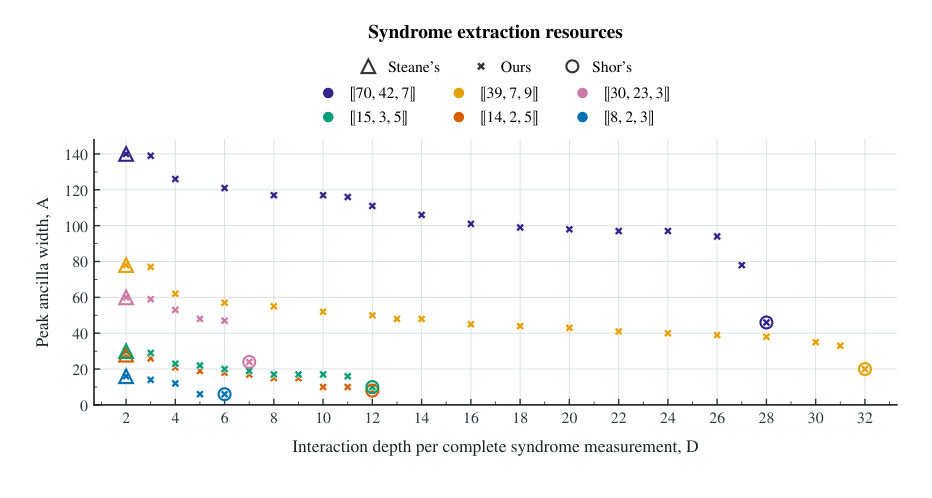
<figcaption class="paper-figure-caption"><b>Fig 3.</b> Figure 3: Costs of Shor, Steane, and our syndrome extraction circuits for the codes described in Appendix H. As an example, our procedure can measure the complete syndrome of the J8, 2, 3K code with a depth-4 circuit, up to the final single-qubit measurements, using at most 12 ancilla qubits at any time. All costs exclude ancilla preparation and redundant syndrome measurements, as both are subject to optimizations beyond the scope of this work.</figcaption>
</figure>
<figure class="paper-figure-card">
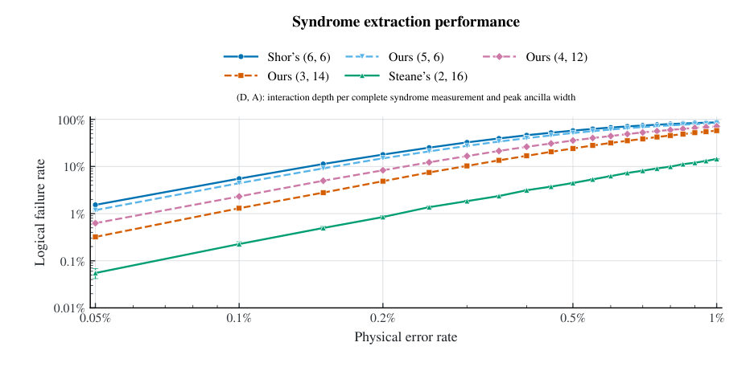
<figcaption class="paper-figure-caption"><b>Fig 4.</b> Figure 4: Performance of Shor, Steane, and our syndrome extraction circuits for the J8, 2, 3K code. Each curve corresponds to one of the five (D, A) points for this code in Figure 3. The x-axis shows the physical error rate, and the y-axis shows the proportion of Monte Carlo runs in which the error remaining after the procedure was uncorrectable. Error bars show 95% confidence intervals, and lines connect the data points to guide the eye. The simulations use circuit-level depolarizing noise and measurement errors, with ideal state preparation followed by independent single-qubit depolarizing noise on each prepared qubit; further simulation details are provided in Appendix H.</figcaption>
</figure>
<figure class="paper-figure-card">
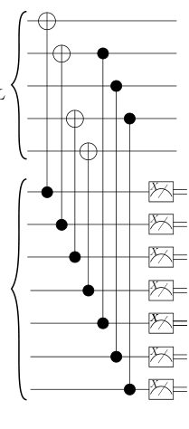
<figcaption class="paper-figure-caption"><b>Fig 5.</b> Figure 5: Circuit implementing our syndrome extraction procedure for the five-qubit code, with SpMq “ tX1Z2Z3X4, X2Z3Z4X5u. The input state ˜ψ D</figcaption>
</figure>
</div>

<p><strong>Summary.</strong> This paper introduces a general and configurable method for fault-tolerant syndrome extraction for any stabilizer code. It unifies existing protocols like Shor and Steane by providing a tunable trade-off between the circuit's depth and its width. This is a significant theoretical advance for building scalable quantum error correction circuits.</p>
<p><strong>Why it may be interesting.</strong> While focused on abstract quantum error correction, the resource optimization techniques (depth vs. width trade-off) are highly relevant for designing physical quantum circuits using platforms like trapped ions or superconducting qubits.</p>
<details>
<summary>Detailed structure</summary>
<p><strong>Main problem.</strong> Existing general protocols for fault-tolerant syndrome extraction in stabilizer-code-based quantum error correction suffer from high costs in either circuit depth or width.</p>
<p><strong>Main result.</strong> The authors propose a unified, configurable construction that allows for a tunable trade-off between circuit depth and width for syndrome extraction applicable to any stabilizer code.</p>
<p><strong>Method.</strong> The method utilizes the stabilizer formalism and a matrix representation to decompose Pauli operators into X and Z components, allowing for the generalization of existing protocols like Shor and Steane extraction.</p>
<p><strong>Model / system.</strong> The work focuses on stabilizer codes, defined by a stabilizer group S acting on qubits, and the process of measuring the error syndrome to detect and correct errors.</p>
<p><strong>Key observables.</strong> The syndrome measurement outcome vector ($s \in \mathbb{Z}_2^m$), and the resource trade-off between circuit depth and width.</p>
<p><strong>Important parameters / regimes.</strong> Code distance ($d$), error correction capability ($t$), and the specific structure of the stabilizer generators ($S, L$).</p>
<p><strong>Assumptions / limitations.</strong> The analysis relies on the Pauli propagation framework and the ability to maintain the validity of the stabilizer state throughout the measurement procedure.</p>
<p><strong>Figures summary.</strong> Figure 1 schematically compares resource trade-offs (depth vs. width) among different syndrome extraction methods. Figure 2 illustrates circuit diagrams for Shor, Steane, and the proposed generalized procedure.</p>
<p><strong>Paper structure.</strong> The paper reviews existing methods, introduces the general framework using Pauli decomposition, details the generalized procedure for syndrome extraction, and proves its validity by showing the preservation of stabilizer commutation and independence across all steps.</p>
</details>
<details>
<summary>Abstract</summary>
<p>Fault-tolerant syndrome extraction is fundamental to stabilizer-code-based quantum error correction, yet existing general protocols incur substantial costs in either circuit depth or width. In this work, we design ancilla stabilizer states for a general transversal circuit to construct a family of fault-tolerant syndrome-extraction gadgets that interpolate between Shor and Steane syndrome extraction for any stabilizer code. The result is a configurable trade-off between circuit depth and width.</p>
</details>
<p><sub><a href="#top">↑ back to top</a></sub></p>

<p><a id="paper-2610.31571"></a></p>
<h3 id="size-independent-logarithmic-sobolev-inequalities-for-quantum-gibbs-samplers"><a href="http://arxiv.org/abs/2610.31571v1">Size-independent Logarithmic Sobolev Inequalities for Quantum Gibbs Samplers</a></h3>
<p><strong>Authors:</strong> Hongrui Chen, Zhiyan Ding, Jianfeng Lu<br>
<strong>Type:</strong> theory · <strong>Category:</strong> statistical mechanics · <strong>PDF:</strong> <a href="https://arxiv.org/pdf/2610.31571v1">https://arxiv.org/pdf/2610.31571v1</a><br>
<strong>Analysis basis:</strong> full PDF text, analyzed in chunks
<strong>Topic relevance:</strong> <code>analog quantum simulation</code> <strong>1/5</strong> · <code>correlated / nonlocal dissipation</code> <strong>1/5</strong> · <code>driven-dissipative phase transition</code> <strong>1/5</strong> · <code>methods for driven-dissipative</code> <strong>1/5</strong> · <code>non-equilibrium universality</code> <strong>1/5</strong> · <code>scars &amp; prethermalization</code> <strong>1/5</strong></p>
<div class="figure-strip-hint">↔ Scroll figures horizontally</div>
<div class="paper-figures-scroll">
<figure class="paper-figure-card">
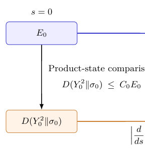
<figcaption class="paper-figure-caption"><b>Fig 1.</b> Figure 1. Transporting the product-state inequality along a unitary path (Proposition 4.1). Here Es = ⟨Ys|(−Lσs)|Ys⟩and Cβ = (C0 + βCS)eβCE.</figcaption>
</figure>
<figure class="paper-figure-card">
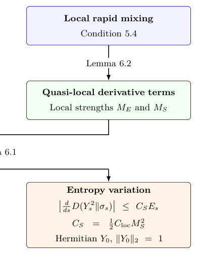
<figcaption class="paper-figure-caption"><b>Fig 2.</b> Figure 2. Conditions for controlled variation of energy and entropy along the flow of Proposition 5.3, under the hypotheses of Lemma 6.2 and Proposition 6.5, with the same exponent p0 in the quasi-local norms.</figcaption>
</figure>
</div>

<p><strong>Summary.</strong> This paper develops a novel mathematical framework to prove size-independent Logarithmic Sobolev Inequalities for quantum Gibbs samplers. By transporting an L2 LSI along a unitary path from infinite temperature, the authors derive bounds for the relative entropy, which are essential for proving rapid mixing times in quantum spin systems. This advances the theoretical understanding of thermalization dynamics in quantum many-body systems.</p>
<p><strong>Why it may be interesting.</strong> This work provides a powerful, general mathematical tool for proving rapid mixing bounds in quantum many-body systems, which is crucial for understanding thermalization and quantum dynamics in condensed matter physics.</p>
<details>
<summary>Detailed structure</summary>
<p><strong>Main problem.</strong> The central goal is to establish size-independent Logarithmic Sobolev Inequalities (LSI) and Modified Logarithmic Sobolev Inequalities (MLSI) for quantum Gibbs samplers.</p>
<p><strong>Main result.</strong> The authors propose a general framework that achieves size-independent bounds for both L2 LSI and MLSI for quantum Gibbs samplers in specific regimes (e.g., 1D at any temperature, or higher dimensions at high temperature).</p>
<p><strong>Method.</strong> The core technique involves transporting an L2 LSI from an infinite-temperature product state to the target Gibbs state along a temperature-dependent unitary path, analogous to classical transport maps.</p>
<p><strong>Model / system.</strong> The study focuses on quantum Gibbs samplers whose Lindblad generators satisfy Kubo-Martin-Schwinger (KMS) detailed balance, applied to quantum spin chains (both 1D and finite-range systems).</p>
<p><strong>Key observables.</strong> L2 relative entropy, sandwiched Rényi-2 divergence, and the relative entropy itself, which are used to diagnose the rate of convergence.</p>
<p><strong>Important parameters / regimes.</strong> The analysis depends on the inverse temperature ($eta$), the spatial dimension ($d$), and the system size ($n$), with the key result being the independence of the bounds on $n$.</p>
<p><strong>Assumptions / limitations.</strong> The generator $L$ must be primitive and KMS-symmetric. The method relies on the existence of a unitary path connecting the infinite-temperature state to the Gibbs state.</p>
<p><strong>Paper structure.</strong> The paper develops the framework by first establishing the L2 LSI via unitary path transport, then using a tensor-power argument to transfer this bound to the relative entropy (MLSI). Subsequent sections apply this framework to prove the inequalities for specific physical regimes (1D and high-temperature).</p>
</details>
<details>
<summary>Abstract</summary>
<p>We propose a new method for proving $L^2$ and modified logarithmic Sobolev inequalities with constants independent of system size for quantum Gibbs samplers whose Lindblad generators satisfy Kubo-Martin-Schwinger (KMS) detailed balance. We first establish the $L^2$ logarithmic Sobolev inequality by transporting it along a temperature-dependent path from the infinite-temperature product state to the target Gibbs state while maintaining a size-independent decay rate for the sandwiched Rényi-2 divergence. A tensor-power argument, combined with the quantum asymptotic equipartition property, then transfers this decay bound to relative entropy, yielding the modified logarithmic Sobolev inequality. This approach provides a general framework for proving size-independent logarithmic Sobolev inequalities for quantum Gibbs samplers. We apply it to two regimes: one-dimensional quantum spin chains at every finite temperature, and finite-range quantum spin systems at sufficiently high temperature in any fixed dimension.</p>
</details>
<p><sub><a href="#top">↑ back to top</a></sub></p>

<p><a id="paper-2610.31575"></a></p>
<h3 id="dynamics-of-random-recurrent-neural-networks-colored-noise-and-sublinear-activations"><a href="http://arxiv.org/abs/2610.31575v1">Dynamics of random recurrent neural networks: colored noise and sublinear activations</a></h3>
<p><strong>Authors:</strong> German Mato, Facundo Rigatuso, Gonzalo Torroba<br>
<strong>Type:</strong> theory · <strong>Category:</strong> disordered systems and neural networks · <strong>PDF:</strong> <a href="https://arxiv.org/pdf/2610.31575v1">https://arxiv.org/pdf/2610.31575v1</a><br>
<strong>Analysis basis:</strong> full PDF text, analyzed in chunks
<strong>Topic relevance:</strong> <code>Keldysh / 2PI / non-Gaussian methods</code> <strong>1/5</strong> · <code>correlated / nonlocal dissipation</code> <strong>1/5</strong> · <code>driven-dissipative phase transition</code> <strong>1/5</strong> · <code>methods for driven-dissipative</code> <strong>1/5</strong> · <code>non-equilibrium universality</code> <strong>1/5</strong></p>
<div class="figure-strip-hint">↔ Scroll figures horizontally</div>
<div class="paper-figures-scroll">
<figure class="paper-figure-card">
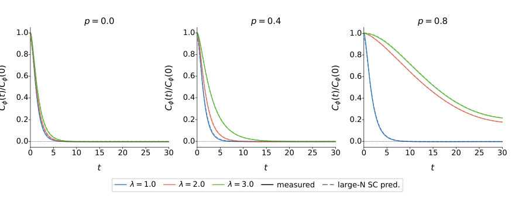
<figcaption class="paper-figure-caption"><b>Fig 1.</b> Figure 1: Normalized preactivation autocorrelation Cϕ(t)/Cϕ(0) for N = 4000, τ = 1, β = 0.6, τn = 0.5, Dξ = 40, and λ = 1, 2 and 3. The panels show p = 0, 0.4 and 0.8. Solid curves are measured in the simulations; dashed curves are reconstructed from the large-N correlation equation using the measured Cf(t).</figcaption>
</figure>
<figure class="paper-figure-card">
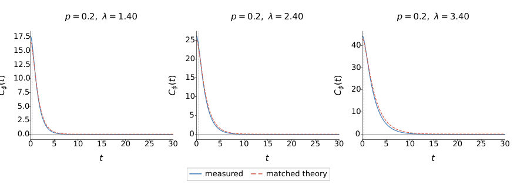
<figcaption class="paper-figure-caption"><b>Fig 2.</b> Figure 2: Unnormalized preactivation autocorrelation Cϕ(t) measured in the simulations (solid curves) and predicted by matching the short-time solution to the long-time Mehler expansion through k = 3 (dashed curves), without measured input. The parameters are N = 4000, p = 0.2,τ = 1, β = 0.6, τn = 0.5, Dξ = 40, and λ = 1.4, 2.4 and 3.4 from left to right. Each panel reports the predicted and measured variance q, the predicted intrinsic correlation time 1/κ, and the matching time t∗.</figcaption>
</figure>
<figure class="paper-figure-card">

<figcaption class="paper-figure-caption"><b>Fig 3.</b> Figure 3 shows how the two dynamical thresholds are extracted at τn = 0.5 and Dξ = 40, for p = 0, 0.4 and 0.8. The upper panels plot λ2Cf′(0)−1, evaluated using Cf′(0) measured in the simulations; its zero defines λc,1 according to Eq. (3.22). The lower panels show the largest Lyapunov exponent measured by the Benettin procedure, together with the theoretical result from the ground-state energy of Eq. (3.38), ΛL = (√1 −E0 −1)/τ, obtained using the simulated Cf′(t) in the Schrödinger potential. The close agreement tests the large-N relation between perturbation growth and the stationary derivative correlator.</figcaption>
</figure>
<figure class="paper-figure-card">

<figcaption class="paper-figure-caption"><b>Fig 4.</b> Figure 4 extends this comparison to noise correlation times τn = 0.5, 1, 2 and 10. Here the integrated noise strength is held fixed, D0 = Dξτn = 20. Two properties are clear. First, both thresholds decrease as p increases, and the interval λc,1 &lt; λ &lt; λc,2 narrows. For</figcaption>
</figure>
<figure class="paper-figure-card">
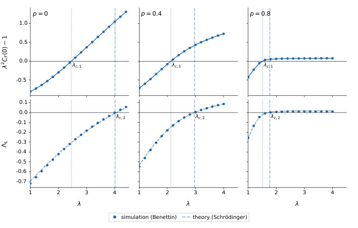
<figcaption class="paper-figure-caption"><b>Fig 5.</b> Figure 3: Determination of the local-instability and chaos thresholds for N = 4000,τ = 1, β = 0.6, τn = 0.5, Dξ = 40, and p = 0, 0.4 and 0.8 from left to right. The upper panels show λ2Cf ′(0) −1 = λ2⟨(f ′)2⟩q −1, whose zero defines λc,1. The lower panels compare the largest Lyapunov exponent from simulations (symbols) with the prediction from the effective Schrödinger problem (dashed curves); its zero defines λc,2. Vertical dotted and dash-dotted lines mark λc,1 and λc,2, respectively.</figcaption>
</figure>
</div>

<p><strong>Summary.</strong> This paper theoretically analyzes the dynamics of random recurrent neural networks subjected to colored noise and sublinear activations. Using large N methods, the authors distinguish between local instability and chaos, finding that internal noise critically limits the network's correlation time at the edge of chaos. This work advances the understanding of stability boundaries in complex, disordered dynamical systems.</p>
<p><strong>Why it may be interesting.</strong> The study provides a framework for understanding how noise and disorder interact to define stability boundaries in complex, non-equilibrium dynamical systems, which shares conceptual links with many-body localization and glassy dynamics.</p>
<details>
<summary>Detailed structure</summary>
<p><strong>Main problem.</strong> The study investigates the complex dynamics of recurrent neural networks (RNNs) characterized by random couplings, sublinear activation functions, and the influence of temporally correlated noise.</p>
<p><strong>Main result.</strong> The analysis distinguishes two thresholds—local linear instability and chaos—showing that internal noise with finite correlation time cuts off the divergence of the intrinsic correlation time at the edge of chaos.</p>
<p><strong>Method.</strong> The research employs large N methods (mean-field theory) to derive self-consistent equations for correlation functions, complemented by chaos diagnostics like the largest Lyapunov exponent.</p>
<p><strong>Model / system.</strong> The model is an RNN governed by a Langevin equation involving quenched random couplings (W_ij), a sublinear activation function f(phi), and dynamical colored noise (xi_i(t)).</p>
<p><strong>Key observables.</strong> Largest Lyapunov exponent, intrinsic correlation time (tau_corr), and frequency-dependent participation dimension.</p>
<p><strong>Important parameters / regimes.</strong> Noise correlation time, integrated noise strength (D_0), and the coupling strength parameter (lambda).</p>
<p><strong>Assumptions / limitations.</strong> The analysis relies on the large-N limit and assumes the use of a smooth family of sublinear activation functions.</p>
<p><strong>Figures summary.</strong> Figures illustrate the disappearance of separated activity lobes and show the nonmonotonic dependence of the leading Principal Component variance fraction (F_1) on network size (N) for various activation exponents (p).</p>
<p><strong>Paper structure.</strong> The paper develops theoretical results using large N methods to analyze the dynamics, contrasting the behavior under internal noise versus static input, and concludes with quantitative predictions for correlation time scaling and dimensionality.</p>
</details>
<details>
<summary>Abstract</summary>
<p>We study the dynamics of recurrent neural networks with random couplings, sublinear odd activation functions, and temporally correlated noise. Using large N methods, we determine stationary correlations and distinguish the loss of local linear stability from the onset of chaos, characterized by a positive largest Lyapunov exponent. These thresholds delimit an intermediate regime in which local instability coexists with asymptotic stability under a common noise history. Their separation depends on both the noise correlation time and the asymptotic growth of the activation function. We show that internal noise with any finite correlation time cuts off the divergence of the network's intrinsic correlation time tau_corr at the edge of chaos; it exhibits a critical scaling tau_{corr,max} propto 1/sqrt{D_0}, where D_0 is the integrated noise strength. Static random input instead produces coincident thresholds and a divergent correlation time. We also calculate the frequency-dependent participation dimension from a four-point correlation function. Its zero-frequency value is inversely proportional to the fourth power of the network correlation time, predicting a smooth minimum at the weak-noise chaos threshold. Numerical simulations support the large-network predictions and reveal appreciable finite-size effects.</p>
</details>
<p><sub><a href="#top">↑ back to top</a></sub></p>

<p><a id="paper-2610.31564"></a></p>
<h3 id="occupancy-driven-phase-transitions-in-gapped-systems"><a href="http://arxiv.org/abs/2610.31564v1">Occupancy Driven Phase Transitions in Gapped Systems</a></h3>
<p><strong>Authors:</strong> Ian Madden, Alex Kociubinski, Wouter Montfrooij<br>
<strong>Type:</strong> theory · <strong>Category:</strong> statistical mechanics · <strong>PDF:</strong> <a href="https://arxiv.org/pdf/2610.31564v1">https://arxiv.org/pdf/2610.31564v1</a><br>
<strong>Analysis basis:</strong> full PDF text, analyzed in chunks
<strong>Topic relevance:</strong> <code>Keldysh / 2PI / non-Gaussian methods</code> <strong>1/5</strong> · <code>analog quantum simulation</code> <strong>1/5</strong> · <code>driven-dissipative phase transition</code> <strong>1/5</strong> · <code>non-equilibrium universality</code> <strong>1/5</strong></p>
<div class="figure-strip-hint">↔ Scroll figures horizontally</div>
<div class="paper-figures-scroll">
<figure class="paper-figure-card">
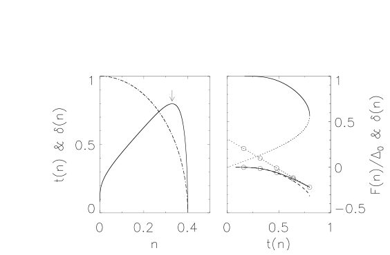
<figcaption class="paper-figure-caption"><b>Fig 1.</b> FIG. 1. Left panel: the reduced temperature (solid line) and gap (dashed line) versus occupancy. The arrow points to the maximum of t(n). Right: The free energy [eqn (4)] displays a minimum (solid curve with symbols) and a maximum (dotted) for each temperature. The dashed curve is the incorrect free energy curve based on E(n) = n∆(n). Also shown is the gap as a function of T (solid line: free energy minimum; dotted curve: maximum). α= 2.5 was used for this figure.</figcaption>
</figure>
<figure class="paper-figure-card">
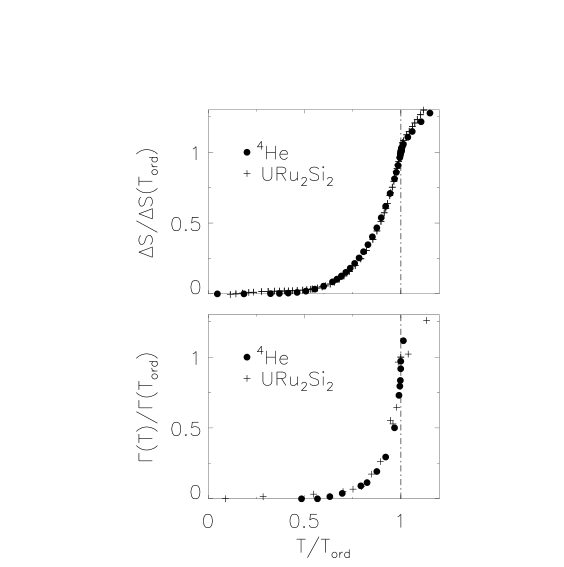
<figcaption class="paper-figure-caption"><b>Fig 2.</b> FIG. 2. Figure adapted from Ref. [25]. Top panel: Entropy versus temperature for URu2Si2 [∆S= S-S(T=1 K)] and 4He (∆S= S), made to coincide at the ordering temperature. Bot- tom panel: The (scaled) damping rates of the roton minimum and the incommensurate gap minimum [24] in URu2Si2. The temperature evolution of both systems is essentially identical.</figcaption>
</figure>
<figure class="paper-figure-card">
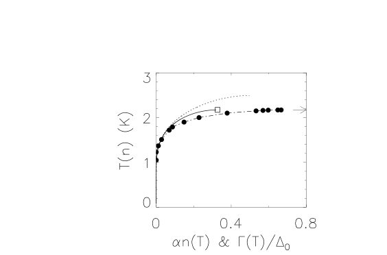
<figcaption class="paper-figure-caption"><b>Fig 3.</b> FIG. 3. T(n) for superfluid helium versus Γ(T) = ∆0αnrot(T) using the analytically determined number of roton excitations from eqn (12) as input (dotted) and for eqn (12) including the energy shift δϵ = ∆0βnrot(T) (solid curve). The measured Γ(T) [20] are displayed as filled symbols, while the arrow in- dicates Tλ. Note the similar approach of all three curves, rep- resenting the termination of the self-consistent solution (cal- culations) and the process of the actual roton excitation be- coming an ordinary density fluctuation. The square indicates the point where the roton density equals the fluid density.</figcaption>
</figure>
</div>

<p><strong>Summary.</strong> This paper proposes a mechanism for phase transitions in gapped quantum systems driven not by symmetry breaking, but by the thermal excitation population itself. By analyzing the free energy landscape, the authors show that an instability occurs when the excitation density reaches a critical point, leading to a specific heat divergence. This framework successfully models transitions in superfluid Helium and suggests it applies to exotic materials like $  ext{URu}_2  ext{Si}_2$.</p>
<p><strong>Why it may be interesting.</strong> This work provides a general, non-standard mechanism for phase transitions that bypasses the need for traditional order parameters, which is highly relevant for understanding complex quantum materials like $  ext{URu}_2  ext{Si}_2$ that exhibit 'hidden order.'</p>
<details>
<summary>Detailed structure</summary>
<p><strong>Main problem.</strong> The paper investigates the mechanism of 'occupancy driven phase transitions' in gapped quantum systems, where the energy gap itself is modified by the density of thermal excitations.</p>
<p><strong>Main result.</strong> The transition is marked by a divergence in the specific heat, which can occur without the necessity of an order parameter or the complete closure of the energy gap.</p>
<p><strong>Method.</strong> The analysis involves deriving the free energy as a function of excitation occupancy and identifying thermodynamic instabilities by examining the curvature of this free energy.</p>
<p><strong>Model / system.</strong> The study uses a general framework applicable to gapped systems, illustrated by a simple two-level model, superfluid Helium-4 ($    ext{}^4 ext{He}$), and the material $   ext{URu}_2  ext{Si}_2$. The gap $\Delta(T)$ is modeled to depend on the thermal occupancy $n(T)$.</p>
<p><strong>Key observables.</strong> Divergence in specific heat ($C$), the free energy curvature ($\partial^2 F / \partial n^2$), and the excitation population $n(T)$.</p>
<p><strong>Important parameters / regimes.</strong> Critical occupancy ($n_c$), temperature ($T$), and the coupling constants governing the gap dependence on occupancy.</p>
<p><strong>Assumptions / limitations.</strong> The primary assumption is that the system's energy gap is dynamically dependent on the population of thermal excitations, leading to a thermodynamic instability when the free energy minimum becomes unstable.</p>
<p><strong>Figures summary.</strong> Figure 1 illustrates the fold instability in the free energy landscape. Figure 3 compares theoretical predictions for the damping rate ($\Gamma(T)$) in $  ext{}^4 ext{He}$ using different theoretical terms (damping only vs. damping + energy shift) against experimental data.</p>
<p><strong>Paper structure.</strong> The paper first establishes the general thermodynamic framework for occupancy-driven transitions using a two-level model. It then applies this framework to $  ext{}^4 ext{He}$ superfluidity, showing how including an energy shift term refines the prediction to match the known lambda transition. Finally, it argues that the hidden order transition in $    ext{URu}_2  ext{Si}_2$ falls into this same category of transition.</p>
</details>
<details>
<summary>Abstract</summary>
<p>Systems characterized by an energy gap between the ground state and excited states support a growing number of thermal excitations upon raising the temperature. Provided these excitations interact with each other, their number affects the size of the energy gap akin to a harmonic oscillator where the oscillation frequency is damping dependent. Here we show that once a critical number of excitations is reached, the excitation population becomes thermodynamically unstable and the system transitions between two states. This transition is marked by a divergence in the specific heat, which does not have to be accompanied by an order parameter, nor by the full closure of the gap. We illustrate the thermodynamics using a simple two level system and superfluid $^4$He as examples, and we argue that the hidden order transition in URu$_2$Si$_2$ is an example of such an occupancy driven transition in the absence of an order parameter.</p>
</details>
<p><sub><a href="#top">↑ back to top</a></sub></p>

<p><a id="paper-2610.31394"></a></p>
<h3 id="krylov-complexity-and-entropy-of-composite-quantum-systems"><a href="http://arxiv.org/abs/2610.31394v1">Krylov Complexity and Entropy of Composite Quantum Systems</a></h3>
<p><strong>Authors:</strong> Jeff Murugan, Victor Van Aswegen, Hendrik J R Van Zyl<br>
<strong>Type:</strong> theory · <strong>Category:</strong> statistical mechanics · <strong>PDF:</strong> <a href="https://arxiv.org/pdf/2610.31394v1">https://arxiv.org/pdf/2610.31394v1</a><br>
<strong>Analysis basis:</strong> full PDF text, analyzed in chunks
<strong>Topic relevance:</strong> <code>analog quantum simulation</code> <strong>1/5</strong> · <code>non-equilibrium universality</code> <strong>1/5</strong> · <code>scars &amp; prethermalization</code> <strong>1/5</strong></p>
<div class="figure-strip-hint">↔ Scroll figures horizontally</div>
<div class="paper-figures-scroll">
<figure class="paper-figure-card">
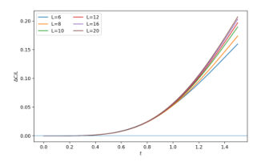
<figcaption class="paper-figure-caption"><b>Fig 1.</b> Figure 1: Excess Krylov complexity per site for the Kitaev chain with µ = J = ∆= 1 and several system sizes. The approximate collapse of the curves demonstrates the extensive scaling of the excess complexity beyond the strict early-time regime.</figcaption>
</figure>
<figure class="paper-figure-card">
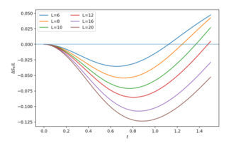
<figcaption class="paper-figure-caption"><b>Fig 2.</b> Figure 2: Difference between the entropy of the combined Lanczos chain and the product Krylov entropy, ∆S K = S comb K −S prod K , per site for the Kitaev chain with µ = J = ∆= 1. The negative entropy difference at early and intermediate times reflects the compression of subsystem-resolved Krylov information by the combined Lanczos construction. Its increasing magnitude with system size is consistent with the L log L enhancement of the leading short-time contribu- tion.</figcaption>
</figure>
</div>

<p><strong>Summary.</strong> This paper develops and applies Krylov complexity and Krylov entropy to quantify how the dynamics of a composite quantum system deviates from the simple sum of its parts. It establishes that this excess non-additivity is precisely controlled by the weighted variance of the subsystem Lanczos coefficients. These measures offer complementary theoretical probes for understanding collective dynamics and synchronization in many-body quantum systems.</p>
<p><strong>Why it may be interesting.</strong> This work provides powerful, quantifiable tools (complexity and entropy measures) to diagnose non-equilibrium dynamics and the emergence of collective behavior in large quantum systems, which is central to understanding many-body physics.</p>
<details>
<summary>Detailed structure</summary>
<p><strong>Main problem.</strong> The paper investigates the non-additive behavior of quantum dynamics in composite systems by analyzing excess complexity and Krylov entropy.</p>
<p><strong>Main result.</strong> Excess complexity and Krylov entropy are shown to be controlled by the weighted variance of subsystem Lanczos coefficients, providing complementary measures of dynamical heterogeneity and the deviation from synchronous evolution.</p>
<p><strong>Method.</strong> The analysis uses early-time expansions of Krylov complexity and entropy, relating them to the Lanczos coefficients derived from the system's Hamiltonian.</p>
<p><strong>Model / system.</strong> The study uses general composite quantum systems, with the Kitaev chain serving as a detailed test case analyzed in momentum space.</p>
<p><strong>Key observables.</strong> Krylov Complexity ($C(t)$), Excess Complexity ($\Delta C(t)$), Krylov Entropy ($S_K(t)$), and the entropy difference ($\Delta S_K(t)$).</p>
<p><strong>Important parameters / regimes.</strong> Time ($t$), system size ($L$), and the weighted variance of Lanczos coefficients ($ ext{Var}<em 1_i="1,i">w(a</em>)$).</p>
<p><strong>Assumptions / limitations.</strong> The analysis relies on early-time expansions and specific algebraic structures (like the Heisenberg-Weyl algebra) to derive explicit formulas for the leading order terms.</p>
<p><strong>Figures summary.</strong> Figure 1 shows extensive scaling of excess complexity per site for the Kitaev chain; Figure 2 compares combined and product Krylov entropies, showing a negative deficit ($\Delta S_K < 0$).</p>
<p><strong>Paper structure.</strong> The paper progresses by defining the diagnostics (complexity/entropy), deriving the leading order behavior using Lanczos coefficients, and then comparing the excess terms ($\Delta C(t)$ and $\Delta S_K(t)$) to show they are governed by the same variance term.</p>
</details>
<details>
<summary>Abstract</summary>
<p>We investigate the behaviour of Krylov complexity as the number of degrees of freedom of a quantum system increases. Specifically, we show that for tensor products of commuting subsystems, the leading excess complexity is controlled by a weighted variance of the subsystem Lanczos coefficients. This provides a quantitative measure of dynamical heterogeneity and a precise characterization of synchronous evolution. We also show that Krylov entropy is able to disambiguate the information associated with subsystems composition from that generated by dynamical mismatch, and that the same Lanczos variance controls the leading mismatch contribution to both complexity and the entropy. Our results establish excess complexity and Krylov entropy as complementary probes of the emergence of collective dynamics in large quantum systems.</p>
</details>
<p><sub><a href="#top">↑ back to top</a></sub></p>

<p><a id="paper-2610.30270"></a></p>
<h3 id="symmetry-preserving-and-scalable-variational-circuits-for-the-lattice-gross-neveu-model"><a href="http://arxiv.org/abs/2610.30270v1">Symmetry-Preserving and Scalable Variational Circuits for the Lattice Gross-Neveu Model</a></h3>
<p><strong>Authors:</strong> Vivan Bhatt, Zhongtian Dong, Kyoungchul Kong, Kwangmin Yu<br>
<strong>Type:</strong> theory · <strong>Category:</strong> quantum information and computing · <strong>PDF:</strong> <a href="https://arxiv.org/pdf/2610.30270v1">https://arxiv.org/pdf/2610.30270v1</a><br>
<strong>Analysis basis:</strong> full PDF text, analyzed in chunks
<strong>Topic relevance:</strong> <code>Keldysh / 2PI / non-Gaussian methods</code> <strong>1/5</strong> · <code>analog quantum simulation</code> <strong>1/5</strong> · <code>quantum measurements</code> <strong>1/5</strong></p>
<div class="figure-strip-hint">↔ Scroll figures horizontally</div>
<div class="paper-figures-scroll">
<figure class="paper-figure-card">
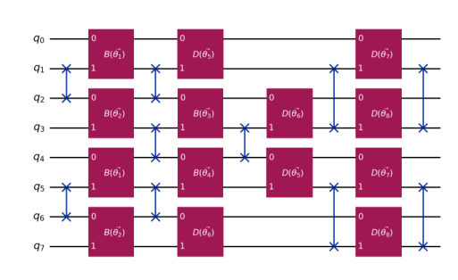
<figcaption class="paper-figure-caption"><b>Fig 1.</b> FIG. 1. Example circuit for the flavor-number-conserving ansatz, with Nf = 2 and LD = 2. For the total-number- conserving ansatz, the D blocks that act on off-diagonal qubit pairs are also replaced by the B blocks that redistribute occu- pation across different flavors while preserving the total num- ber.</figcaption>
</figure>
<figure class="paper-figure-card">
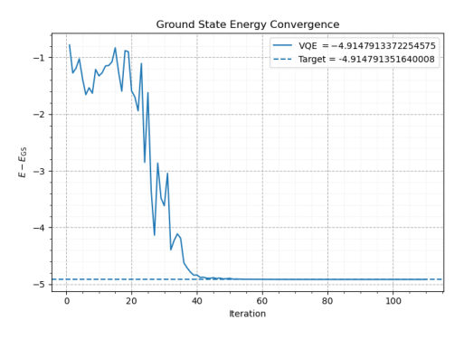
<figcaption class="paper-figure-caption"><b>Fig 2.</b> FIG. 2. Ground-state energy convergence for 8-qubit flavor- number-conserving ansatz with m = 0, g2 = 1.0, Nf = 2, LD = 2, and open boundary conditions.</figcaption>
</figure>
<figure class="paper-figure-card">
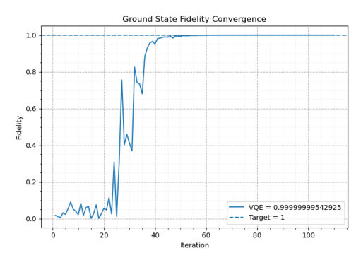
<figcaption class="paper-figure-caption"><b>Fig 3.</b> FIG. 3. Ground-state fidelity convergence for 8-qubit flavor- number-conserving ansatz with m = 0, g2 = 1.0, Nf = 2, LD = 2, and open boundary conditions.</figcaption>
</figure>
<figure class="paper-figure-card">
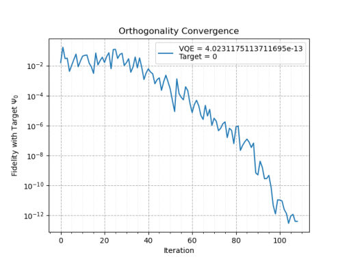
<figcaption class="paper-figure-caption"><b>Fig 4.</b> FIG. 4. Squared overlap of VQE first excited state with the target VQE ground state minimized via the loss function with m = 0, g2 = 1.0, a = 1, LD = 2, Nf = 2, open boundary conditions, and λ = 10 applied to the deflation terms.</figcaption>
</figure>
<figure class="paper-figure-card">
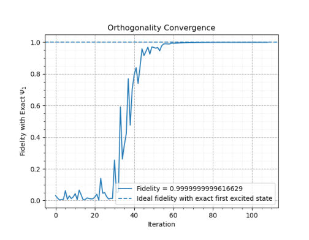
<figcaption class="paper-figure-caption"><b>Fig 5.</b> FIG. 5. Squared overlap of VQE first excited state with the exact first excited state with m = 0, g2 = 1.0, a = 1, LD = 2, Nf = 2, open boundary conditions, and λ = 10 applied to the deflation terms.</figcaption>
</figure>
</div>

<p><strong>Summary.</strong> This work develops and tests advanced, symmetry-preserving variational quantum circuits to simulate the ground and excited states of the lattice Gross-Neveu model. By employing an adaptive VQE approach (SC-ADAPT-VQE) and enforcing flavor conservation, the authors achieve high accuracy in energy estimations. This research advances the feasibility of using quantum computation to solve complex, strongly interacting quantum field theories.</p>
<p><strong>Why it may be interesting.</strong> The rigorous focus on symmetry-preserving quantum circuit design and the application to a well-known interacting field theory like the Gross-Neveu model demonstrates a sophisticated intersection of quantum computation theory and condensed matter physics.</p>
<details>
<summary>Detailed structure</summary>
<p><strong>Main problem.</strong> The paper addresses the variational preparation of ground states and sector-resolved excited states for the (1+1)-dimensional lattice Gross-Neveu model.</p>
<p><strong>Main result.</strong> The authors achieved low relative energy errors ($\approx 10^{-5}$ to $2 	imes 10^{-3}$) using symmetry-preserving variational circuits, with MPS evaluations extending simulations to large qubit numbers.</p>
<p><strong>Method.</strong> They employ advanced quantum algorithms, specifically a problem-specific scalable-circuit adaptive variational quantum eigensolver (SC-ADAPT-VQE), combined with fixed-ansatz circuits that enforce specific symmetries (total or flavor number conservation).</p>
<p><strong>Model / system.</strong> The system is the (1+1)-dimensional lattice Gross-Neveu model, which describes relativistic fermion flavors coupled by a four-fermion interaction. The Hamiltonian is analyzed using staggered fermions and various hopping conventions.</p>
<p><strong>Key observables.</strong> Relative energy errors compared against reference results from exact diagonalization and DMRG, and projector fidelities for assessing degenerate eigenspaces.</p>
<p><strong>Important parameters / regimes.</strong> The number of flavors ($N_f$), the lattice size ($L_D$), and the coupling constants ($g_2$, bare mass $m$) are key parameters studied across different regimes.</p>
<p><strong>Assumptions / limitations.</strong> The primary limitations noted include the unestablished performance at arbitrary volumes and the assumption that the fixed order of operators is maintained during the circuit construction.</p>
<p><strong>Figures summary.</strong> No specific figure summaries were extracted, but the notes reference TABLE XVI, which reports representative raw-score SC-ADAPT selection sequences for $N_f = 2, L_D = 4$.</p>
<p><strong>Paper structure.</strong> The paper details the theoretical framework of the lattice model, constructs symmetry-preserving variational circuits (fixed and adaptive), benchmarks these circuits using classical and quantum methods, and reports quantitative energy error results across various system sizes and flavor numbers.</p>
</details>
<details>
<summary>Abstract</summary>
<p>We study variational preparation of ground states and sector-resolved excited states in the $(1+1)$-dimensional lattice Gross-Neveu model. We construct fixed circuits preserving either total fermion number or every flavor number, and a problem-specific scalable-circuit adaptive variational quantum eigensolver (SC-ADAPT-VQE). Classical circuit benchmarks cover massless and massive systems through 30 qubits, using exact-diagonalization and tensor-network reference results. Imposing flavor-number conservation improves the achieved energies in the completed two-flavor comparisons. Selected massive fixed-ansatz benchmarks with one to four flavors have relative energy errors of approximately $1 \times 10^{-5}$ - $2 \times 10^{-4}$, smaller than the quoted literature errors where available, although discretizations and computational resources differ. The adaptive pool combines translated bulk and boundary-sensitive generators with an interaction-sensitive cross-flavor family. Selected massive SC-ADAPT benchmarks with one to three flavors have relative energy errors below $2.1 \times 10^{-3}$. For one flavor, matrix-product-state evaluations extend the transferred circuits to 60-400 qubits without target-side operator selection or parameter optimization, giving energy deviations of approximately $0.35\%$ - $1.76\%$ from density-matrix renormalization-group reference values at maximum bond dimension 256. At fixed flavor number, range caps, and append count, the adaptive construction has a precompilation local-factor count linear in volume and a volume-independent shared-parameter count; fixed-accuracy performance at arbitrary volumes remains unestablished. Sequential deflation also prepares low-lying states within a fixed flavor-number sector, with projector fidelities providing a basis-independent assessment of degenerate target eigenspaces.</p>
</details>
<p><sub><a href="#top">↑ back to top</a></sub></p>

<p><a id="paper-2610.30232"></a></p>
<h3 id="twisted-scattering-from-chern-simons-theory"><a href="http://arxiv.org/abs/2610.30232v1">Twisted scattering from Chern-Simons theory</a></h3>
<p><strong>Authors:</strong> Guillermo Arias-Tamargo, Philip Boyle Smith, Rishi Mouland, Max Velásquez Cotini Hutt<br>
<strong>Type:</strong> theory · <strong>Category:</strong> strongly correlated electrons · <strong>PDF:</strong> <a href="https://arxiv.org/pdf/2610.30232v1">https://arxiv.org/pdf/2610.30232v1</a><br>
<strong>Analysis basis:</strong> full PDF text, analyzed in chunks
<strong>Topic relevance:</strong> <code>Keldysh / 2PI / non-Gaussian methods</code> <strong>1/5</strong> · <code>analog quantum simulation</code> <strong>1/5</strong> · <code>quantum measurements</code> <strong>1/5</strong></p>
<div class="figure-strip-hint">↔ Scroll figures horizontally</div>
<div class="paper-figures-scroll">
<figure class="paper-figure-card">
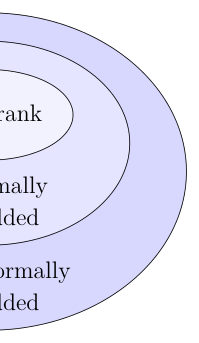
<figcaption class="paper-figure-caption"><b>Fig 1.</b> Figure 1: The hierarchy of difficulties of symmetries G.</figcaption>
</figure>
<figure class="paper-figure-card">
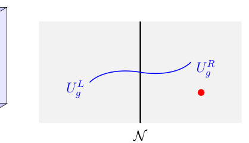
<figcaption class="paper-figure-caption"><b>Fig 2.</b> Figure 2: TQFT construction of the G-preserving defect N.</figcaption>
</figure>
<figure class="paper-figure-card">
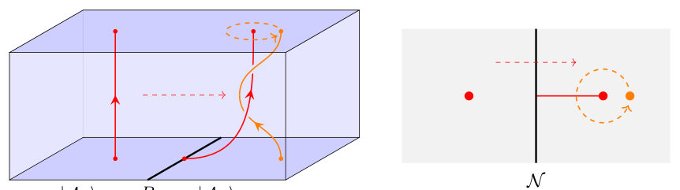
<figcaption class="paper-figure-caption"><b>Fig 3.</b> Figure 3: Twisted scattering occurs when an anyon ending on |AL⟩can no longer end on |AR⟩. The twist line monodromy can be probed by braiding anyons.</figcaption>
</figure>
</div>

<p><strong>Summary.</strong> This paper develops a general framework to study how continuous symmetries are preserved when quantum field theories are placed on a boundary. By using Chern-Simons theory, the authors construct topological defects whose properties, such as the resulting 'twist lines,' are analyzed using advanced algebraic structures. This work is crucial for understanding symmetry protection in strongly correlated and topological matter systems.</p>
<p><strong>Why it may be interesting.</strong> The deep connection between topological defects, symmetry protection, and non-invertible symmetries provides powerful theoretical tools for understanding boundary physics in condensed matter systems, particularly those exhibiting topological order.</p>
<details>
<summary>Detailed structure</summary>
<p><strong>Main problem.</strong> The paper addresses the theoretical problem of defining boundary conditions for quantum field theories (QFTs) on manifolds with boundaries while preserving continuous symmetries without anomalies.</p>
<p><strong>Main result.</strong> The authors provide a general construction for topological defects preserving symmetries using Chern-Simons theory, showing that the resulting twist lines can be intrinsically non-invertible for non-abelian symmetries.</p>
<p><strong>Method.</strong> The methodology involves analyzing Dirac fermions via a 3D Chern-Simons formulation, utilizing concepts from topological quantum field theory (TQFT), and employing algebraic tools like bimodule categories to characterize the defects.</p>
<p><strong>Model / system.</strong> The study focuses on 2D Dirac fermions and Weyl fermions, relating the boundary physics to topological defects (analogous to 't Hooft lines) in chiral gauge theories, with specific examples including the 3450 model and $SU(2) 	imes SU(4) 	imes U(1)^2$ symmetries.</p>
<p><strong>Key observables.</strong> Twist lines, boundary central charge, and the $    ext{mod-}2$ valued SPT class of the folded boundary state.</p>
<p><strong>Important parameters / regimes.</strong> The symmetry group $G$, the number of fermions $N$, and the relationship between the rank of $G$ and $N$.</p>
<p><strong>Assumptions / limitations.</strong> The analysis relies on the assumption that the bottom boundaries are topological and uses advanced mathematical machinery involving super-modular tensor categories.</p>
<p><strong>Figures summary.</strong> Figure 1 illustrates the hierarchy of difficulties for symmetries (equal-rank vs. conformally-embedded). Figure 2 shows the TQFT construction of the defect, and Figure 3 illustrates the process of twisted scattering.</p>
<p><strong>Paper structure.</strong> The paper builds from a general framework using Chern-Simons theory to construct defects, details the mathematical machinery using bimodule categories to characterize the defects, and applies this to specific abelian and non-abelian symmetry examples.</p>
</details>
<details>
<summary>Abstract</summary>
<p>We consider boundary conditions of two-dimensional Dirac fermions which preserve a non-anomalous continuous symmetry which acts differently on the left- and right-movers. Such boundaries are equivalent to topological defects of Weyl fermions preserving the symmetry. We give a general construction of such defects for conformally-embedded symmetries using Chern-Simons theory. They always exist and can be realised as half-space gauging defects for some finite categorical symmetry. Using this technology, we compute the twist lines to which fermions become attached upon scattering through the defect, the boundary central charge of the corresponding folded boundary state, and its mod-2 valued SPT class. As applications, we first consider abelian symmetries and find agreement with known results in the literature. We then study a novel example where an $SU(2) \times SU(4) \times U(1)^2$ symmetry is preserved. In contrast to the abelian case, the twist lines are intrinsically non-invertible and belong to either a $\text{TY}(\mathbb{Z}_3 \times \mathbb{Z}_3)$ or $\text{Rep}(\mathbb{S}_3) \times \mathbb{Z}_3$ symmetry depending on whether scattering is to the left or the right.</p>
</details>
<p><sub><a href="#top">↑ back to top</a></sub></p>

<p><a id="paper-2610.30684"></a></p>
<h3 id="impact-of-localized-math474math-magnetism-on-berry-curvature-and-the-intrinsic-anomalous-hall-effect-in-cerumath475mathsimath476math"><a href="http://arxiv.org/abs/2610.30684v1">Impact of localized $4f$ magnetism on Berry curvature and the intrinsic anomalous Hall effect in CeRu$_2$Si$_2$</a></h3>
<p><strong>Authors:</strong> Takehiro Kobayashi, Shunsuke Hirai, Ibuki Terada, Michi-To Suzuki<br>
<strong>Type:</strong> theory · <strong>Category:</strong> strongly correlated electrons · <strong>PDF:</strong> <a href="https://arxiv.org/pdf/2610.30684v1">https://arxiv.org/pdf/2610.30684v1</a><br>
<strong>Analysis basis:</strong> full PDF text, analyzed in chunks
<strong>Topic relevance:</strong> <code>Keldysh / 2PI / non-Gaussian methods</code> <strong>1/5</strong> · <code>analog quantum simulation</code> <strong>1/5</strong></p>
<div class="figure-strip-hint">↔ Scroll figures horizontally</div>
<div class="paper-figures-scroll">
<figure class="paper-figure-card">
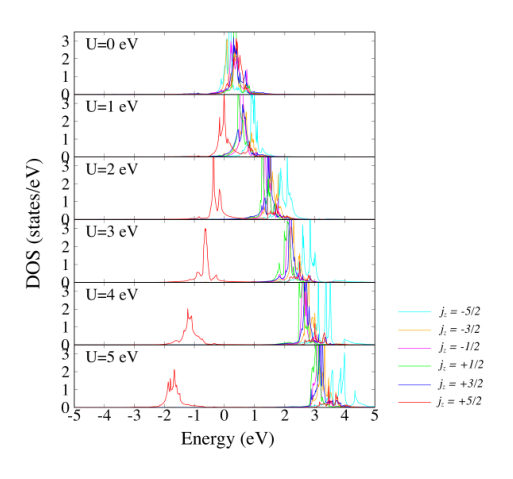
<figcaption class="paper-figure-caption"><b>Fig 1.</b> FIG. 1. jz-resolved DOS for the j = 5/2 orbitals in the LDA+U calculations. The | j = 5/2, jz = +5/2⟩orbital is used as the initial occupation. The Fermi level is set to 0 eV.</figcaption>
</figure>
<figure class="paper-figure-card">
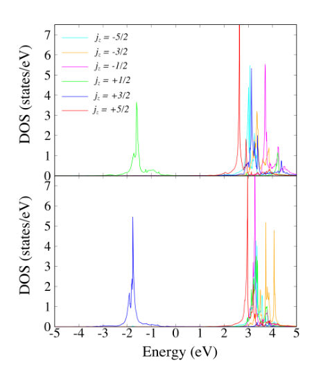
<figcaption class="paper-figure-caption"><b>Fig 2.</b> FIG. 2. jz-resolved DOS for each initially occupied state, |j = 5/2, jz = +1/2⟩, |j = 5/2, jz = +3/2⟩and |j = 5/2, jz = +5/2⟩, at U = 5 eV.</figcaption>
</figure>
<figure class="paper-figure-card">
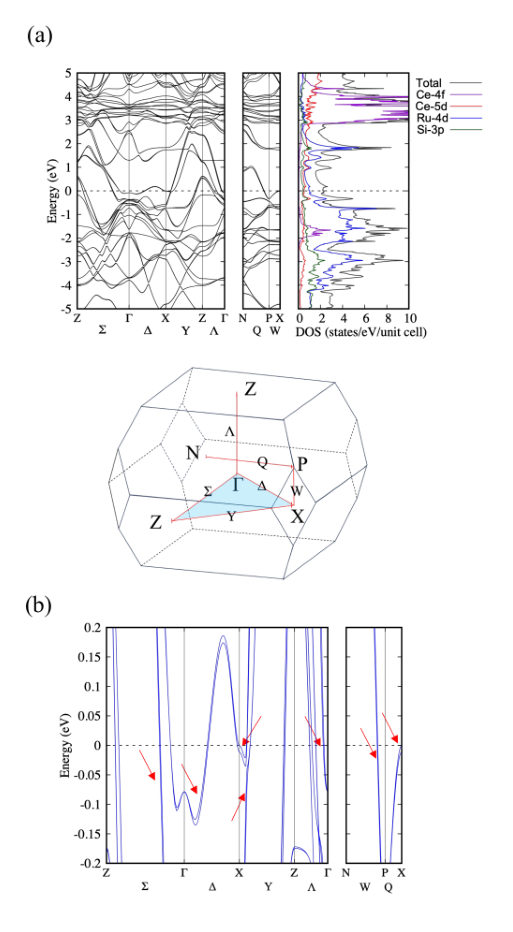
<figcaption class="paper-figure-caption"><b>Fig 3.</b> FIG. 3. (a) Top: band structure of ferromagnetic CeRu2Si2 at U = 5 eV (left) and atomic-orbital-resolved DOS (right). Bottom: first Brillouin zone of CeRu2Si2. (b) Enlarged view of the band struc- ture in top panel near the Fermi level. The red arrows highlight small exchange splitting of the conduction bands associated with the local- ized Ce-4 f magnetism.</figcaption>
</figure>
<figure class="paper-figure-card">
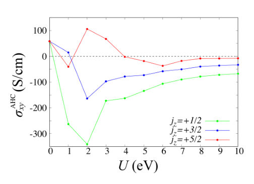
<figcaption class="paper-figure-caption"><b>Fig 4.</b> FIG. 4. U-dependence of the AHC for different |5/2, jz⟩occupied states.</figcaption>
</figure>
<figure class="paper-figure-card">
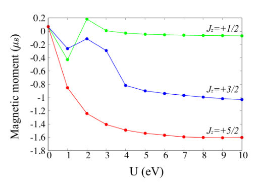
<figcaption class="paper-figure-caption"><b>Fig 5.</b> FIG. 5. U-dependence of the magnetic moment of Ce-4 f electron for different occupied |5/2, jz⟩states.</figcaption>
</figure>
</div>

<p><strong>Summary.</strong> This theoretical study examines the role of localized $4f$ magnetism in determining the intrinsic anomalous Hall effect in $    ext{CeRu}_2 ext{Si}_2$. Using $ ext{LDA}+U$ calculations, the authors demonstrate that the AHE persists even when the $4f$ electrons are localized away from the Fermi level. This suggests that localized magnetic moments can still significantly influence transport properties via exchange splitting in conduction bands.</p>
<p><strong>Why it may be interesting.</strong> While focused on condensed matter magnetism, the mechanism—where localized moments induce Berry curvature in non-magnetic bands—is a general concept in strongly correlated systems that could inform theories of topological materials relevant to AMO physics.</p>
<details>
<summary>Detailed structure</summary>
<p><strong>Main problem.</strong> The study investigates how the magnetism arising from localized $4f$ electrons influences the intrinsic anomalous Hall effect (AHE) in $f$-electron materials.</p>
<p><strong>Main result.</strong> The intrinsic AHE remains finite even when the $4f$ states become localized and do not directly contribute to the Fermi surface, indicating that localized magnetism still influences conduction electrons.</p>
<p><strong>Method.</strong> The intrinsic anomalous Hall conductivity ($\sigma_{	ext{AHC}}^{xy}$) is calculated using first-principles LDA+$U$ methods combined with the Wannier interpolation technique.</p>
<p><strong>Model / system.</strong> The research focuses on the compound $  ext{CeRu}_2 ext{Si}_2$, a Ce-based material exhibiting localized $4f$ magnetism. The calculations employ the $   ext{LDA}+U$ approximation to model the strong electronic correlations.</p>
<p><strong>Key observables.</strong> Intrinsic Anomalous Hall Conductivity ($   ext{AHC}$), $j_z$-resolved Density of States ($   ext{DOS}$), and the magnetic moment ($\mu_z$).</p>
<p><strong>Important parameters / regimes.</strong> The interaction parameter $U$ is crucial, allowing the study to compare itinerant (small-$U$) and localized (large-$U$) regimes.</p>
<p><strong>Assumptions / limitations.</strong> The calculations rely on the $   ext{LDA}+U$ approximation and the use of the Wannier interpolation method for calculating $ ext{AHC}$.</p>
<p><strong>Figures summary.</strong> Figures illustrate the $U$-dependence of $ ext{AHC}$ for different initial $4f$ occupations, showing the persistence of a finite $  ext{AHC}$ in the localized limit, alongside band structure plots highlighting exchange splitting.</p>
<p><strong>Paper structure.</strong> The paper systematically analyzes the $    ext{AHC}$ by varying the Hubbard $U$ parameter, comparing the behavior when $4f$ states are itinerant versus when they are strongly localized, while tracking the resulting magnetic splitting in conduction bands.</p>
</details>
<details>
<summary>Abstract</summary>
<p>The intrinsic anomalous Hall effect (AHE), originating from Berry curvature, has been extensively studied in $f$-electron systems, including Ce-based compounds. However, how the magnetism of localized $f$ electrons affect the intrinsic AHE remains unclear. Here, we investigate this issue in CeRu$_2$Si$_2$ by calculating the intrinsic anomalous Hall conductivity (AHC) for several occupied Ce-$4f$ states using first-principles LDA+$U$ calculations combined with Wannier interpolation method. We find that the intrinsic AHC remains finite even when the Ce-$4f$ states are localized and do not contribute directly to the Fermi surface, and that its magnitude depends on which Ce-$4f$ state is occupied. We show that localized $4f$-electron magnetism induces exchange splitting in the conduction bands, generating Berry curvature in specific regions near the Fermi surface. This mechanism enables conduction bands that are derived from nonmagnetic orbitals and form the Fermi surface to contribute to the intrinsic AHE, suggesting a route to realizing large intrinsic AHE in $f$-electron materials.</p>
</details>
<p><sub><a href="#top">↑ back to top</a></sub></p>

<p><a id="paper-2610.31007"></a></p>
<h3 id="noise-redistribution-by-stabilizer-codes-an-organizing-view-of-concatenated-three-qubit-codes"><a href="http://arxiv.org/abs/2610.31007v1">Noise redistribution by stabilizer codes: an organizing view of concatenated three-qubit codes</a></h3>
<p><strong>Authors:</strong> Long Huang<br>
<strong>Type:</strong> theory · <strong>Category:</strong> quantum information and computing · <strong>PDF:</strong> <a href="https://arxiv.org/pdf/2610.31007v1">https://arxiv.org/pdf/2610.31007v1</a><br>
<strong>Analysis basis:</strong> full PDF text, analyzed in chunks
<strong>Topic relevance:</strong> <code>correlated / nonlocal dissipation</code> <strong>1/5</strong> · <code>quantum measurements</code> <strong>1/5</strong></p>
<div class="figure-strip-hint">↔ Scroll figures horizontally</div>
<div class="paper-figures-scroll">
<figure class="paper-figure-card">
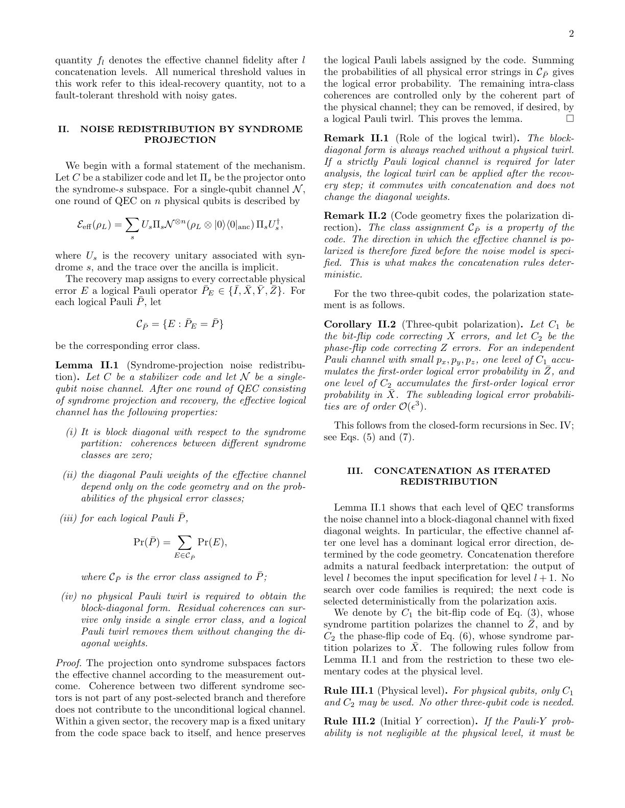
<figcaption class="paper-figure-caption"><b>Fig 1.</b> Low-resolution page preview, page 2</figcaption>
</figure>
<figure class="paper-figure-card">
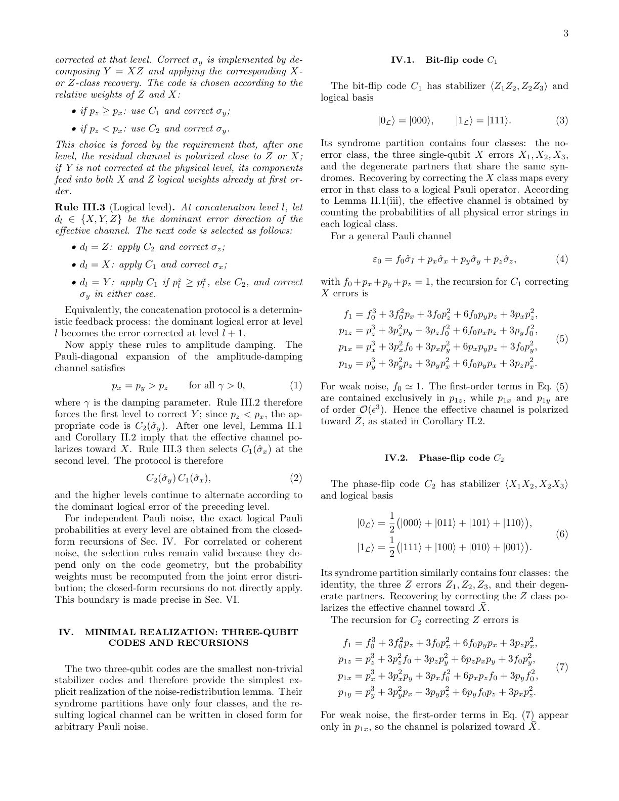
<figcaption class="paper-figure-caption"><b>Fig 2.</b> Low-resolution page preview, page 3</figcaption>
</figure>
<figure class="paper-figure-card">
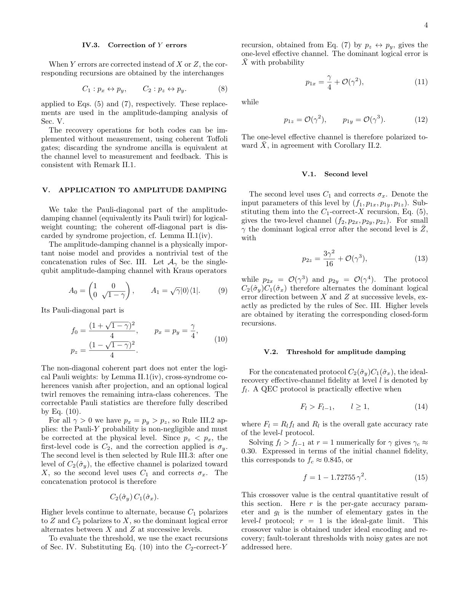
<figcaption class="paper-figure-caption"><b>Fig 3.</b> Low-resolution page preview, page 4</figcaption>
</figure>
<figure class="paper-figure-card">
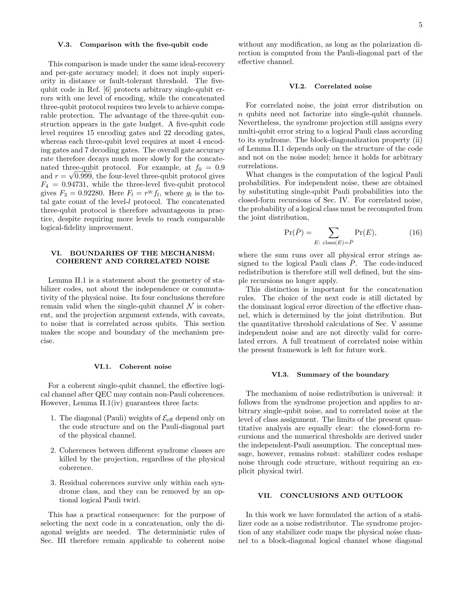
<figcaption class="paper-figure-caption"><b>Fig 4.</b> Low-resolution page preview, page 5</figcaption>
</figure>
<figure class="paper-figure-card">
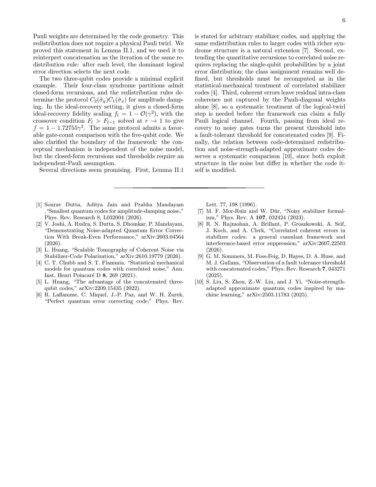
<figcaption class="paper-figure-caption"><b>Fig 5.</b> Low-resolution page preview, page 6</figcaption>
</figure>
</div>

<p><strong>Summary.</strong> This paper presents a novel, organizing framework showing that syndrome measurement in stabilizer codes acts as a deterministic noise redistributor, projecting physical noise onto a structured, block-diagonal logical channel. By viewing concatenation as the iteration of this process, the authors derive specific fidelity scaling laws for amplitude damping. This provides a powerful conceptual tool for analyzing noise resilience in quantum computation.</p>
<p><strong>Why it may be interesting.</strong> The concept of noise redistribution via code geometry is a powerful, abstract tool that can be applied to analyze noise in complex quantum systems, providing insights beyond standard error-correction bounds.</p>
<details>
<summary>Detailed structure</summary>
<p><strong>Main problem.</strong> To develop a general, organizing framework for understanding how concatenated quantum error correction (QEC) reshapes the noise channel via syndrome projection.</p>
<p><strong>Main result.</strong> The framework shows that syndrome measurement projects the physical noise onto a block-diagonal logical channel, and concatenation can be viewed as the iteration of this noise redistribution step, yielding specific fidelity scaling laws.</p>
<p><strong>Method.</strong> The authors use the syndrome projection of stabilizer codes to map the physical noise channel to an effective logical channel, treating concatenation as an iterative application of this noise reshaping rule.</p>
<p><strong>Model / system.</strong> The study focuses on stabilizer codes, specifically using the two smallest three-qubit codes (bit-flip and phase-flip) as explicit examples. The framework is applied to model amplitude damping noise.</p>
<p><strong>Key observables.</strong> Ideal-recovery fidelity ($f_l$), logical Pauli probabilities, and the critical damping parameter ($\gamma_c$).</p>
<p><strong>Important parameters / regimes.</strong> The damping parameter $\gamma$, the number of concatenation levels ($l$), and the noise type (e.g., amplitude damping).</p>
<p><strong>Assumptions / limitations.</strong> The quantitative results for thresholds assume independent Pauli noise and ideal recovery operations (not fault-tolerant thresholds).</p>
<p><strong>Paper structure.</strong> The paper introduces the general concept (II.1) that syndrome projection leads to block-diagonal noise. It then details the deterministic concatenation rule (III.3) based on the dominant logical error, applying this to amplitude damping to derive the specific protocol and fidelity scaling.</p>
</details>
<details>
<summary>Abstract</summary>
<p>We present an organizing framework for concatenated quantum error correction based on the observation that the syndrome projection of a stabilizer code reshapes the noise channel in a code-determined manner. For any stabilizer code, one level of QEC maps the physical noise to a block-diagonal logical channel whose diagonal Pauli weights are fixed by the code geometry. Coherences between different syndrome classes vanish, and no physical Pauli twirl is required to reach this block-diagonal form. Concatenation can then be viewed as the iteration of the same redistribution step: the dominant logical error after one level selects the code used at the next. We instantiate the framework with the two smallest stabilizer codes, the bit-flip and phase-flip codes, and apply it to amplitude damping. The redistribution rules give the concatenation protocol $C_2(\hatσ_y) C_1(\hatσ_x)$, whose ideal-recovery fidelity scales as $f_l=1-\mathcal O(γ^2)$. Solving the crossover condition $F_l>F_{l-1}$ in the ideal-gate limit yields a critical damping parameter $γ_c\approx0.30$; in terms of the initial channel fidelity, $f=1-1.72755γ^2$. Under the same ideal-recovery assumption, we compare the overall gate accuracy rate with that of the five-qubit code. The scope of the framework, in particular for coherent and correlated noise, is stated explicitly.</p>
</details>
<p><sub><a href="#top">↑ back to top</a></sub></p>

<p><a id="paper-2610.31170"></a></p>
<h3 id="quantum-constrained-hamiltonian-descent"><a href="http://arxiv.org/abs/2610.31170v1">Quantum Constrained Hamiltonian Descent</a></h3>
<p><strong>Authors:</strong> Yoshihiko Abe, Ryo Nagai<br>
<strong>Type:</strong> theory · <strong>Category:</strong> other · <strong>PDF:</strong> <a href="https://arxiv.org/pdf/2610.31170v1">https://arxiv.org/pdf/2610.31170v1</a><br>
<strong>Analysis basis:</strong> full PDF text, analyzed in chunks
<strong>Topic relevance:</strong> <code>analog quantum simulation</code> <strong>1/5</strong> · <code>quantum measurements</code> <strong>1/5</strong></p>
<div class="figure-strip-hint">↔ Scroll figures horizontally</div>
<div class="paper-figures-scroll">
<figure class="paper-figure-card">
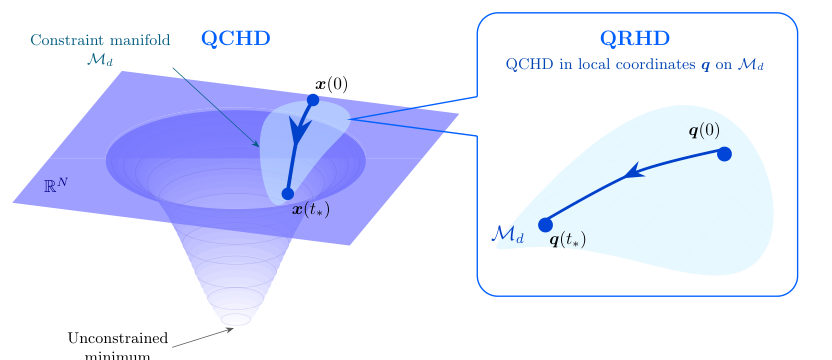
<figcaption class="paper-figure-caption"><b>Fig 1.</b> Figure 1: Schematic picture of QCHD. Left (QCHD): the wave function evolves toward the minimum of the potential V within the constraint manifold Md (light blue). Right (QRHD): the same motion described in local coordinates q on Md corresponds to QRHD [AN26].</figcaption>
</figure>
<figure class="paper-figure-card">
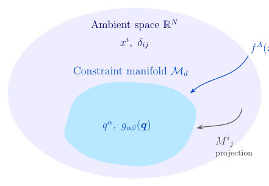
<figcaption class="paper-figure-caption"><b>Fig 2.</b> Figure 2: Schematic picture for our geometric setting. The ambient space RN has Cartesian coordinates {xi}N i=1 and the flat metric δij. The constraint manifold Md is the zero set of the con- straint functions {fA(x)}M A=1. This subspace is parametrized by local coordinates {qα}d=N−M α=1 and carries the induced metric gαβ. The projector Mij in Eq. (2.14) maps vectors of RN onto the tangent space of Md.</figcaption>
</figure>
<figure class="paper-figure-card">

<figcaption class="paper-figure-caption"><b>Fig 3.</b> Figure 3: Spherical constraint with a quadratic potential (Sec. 5.2). Left: time evolution of the probability density |ψ|2. The top row is QCHD and the second to fifth rows are QHD+Penalty with κ = 1, 2, 5, 10; the columns are t = 0, 2, 4, 6, 8, 10. The t = 0 panels show the heat map of the potential V in the background and the initial density as the opacity of the dark overlay; the white dashed line is the constraint circle and the stars are the minima of V |Md. In the t &gt; 0 panels the shading is |ψ|2 normalized to the maximum of each panel, and the dashed line (white in the QCHD row, red in the QHD+Penalty rows) is the constraint circle. The color bars are shown at the upper right. Right:...</figcaption>
</figure>
<figure class="paper-figure-card">
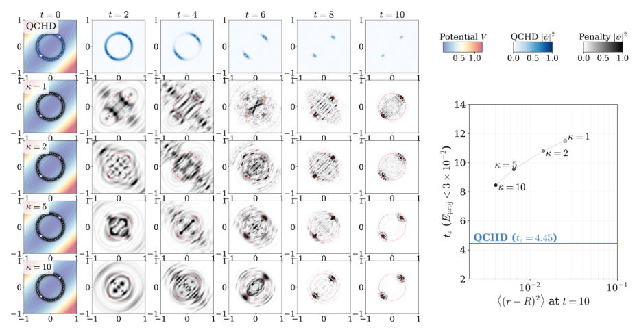
<figcaption class="paper-figure-caption"><b>Fig 4.</b> Fig. 3 shows the evolution of the probability density. QCHD stays on the circle and concen- trates on the two minima by t = 8. QHD+Penalty first spreads inside and outside the circle (the released normal motion), is recaptured the faster the larger κ, and gathers around the minima by t = 10 for κ ≥5. In the Pareto plot (ε = 3 × 10−2), tε is 4.45 for QCHD and 11.51, 10.80, 9.54, and 8.45 for QHD+Penalty with κ = 1, 2, 5, 10: it decreases monotonically with κ, but even at κ = 10 QHD+Penalty takes 1.9 times longer than QCHD. The constraint violation at tref = 10 decreases from 2.5 × 10−2 (κ = 1) to 4.0 × 10−3 (κ = 10). In the range κ ≤10 examined here, QCHD thus converges faster than...</figcaption>
</figure>
<figure class="paper-figure-card">
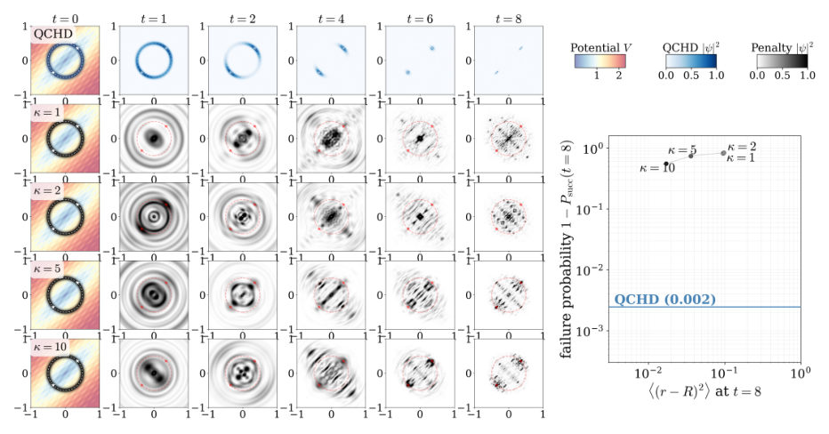
<figcaption class="paper-figure-caption"><b>Fig 5.</b> Figure 4: Spherical constraint with the Ackley potential (Sec. 5.3). The layout is the same as in Fig. 3, with the columns t = 0, 1, 2, 4, 6, 8. In the background of the t = 0 panels, the blue band along the diagonal is the low-V valley (the global minimum is at the origin). In the Pareto plot on the right, the horizontal axis is the constraint violation ⟨(r −R)2⟩at t = 8 and the vertical axis is the failure probability 1 −Psucc(t = 8). Only the failure probability of QCHD is shown as a horizontal line.</figcaption>
</figure>
</div>

<p><strong>Summary.</strong> This paper introduces Quantum Constrained Hamiltonian Descent (QCHD), a novel quantum framework for optimization under constraints that avoids artificial penalty terms. By constructing an intrinsic Hamiltonian on the constraint manifold, QCHD is shown to provide faster and more robust convergence to global minima compared to standard penalty-based quantum approaches. This advances the theoretical tools for quantum optimization in geometrically constrained physical systems.</p>
<p><strong>Why it may be interesting.</strong> The development of constraint-preserving quantum dynamics is crucial for applying quantum simulation techniques to physical systems where parameters are inherently restricted to specific manifolds (e.g., rigid body motion, constrained field theories).</p>
<details>
<summary>Detailed structure</summary>
<p><strong>Main problem.</strong> The paper develops a continuous-time quantum framework to solve optimization problems subject to smooth equality constraints, aiming to improve upon standard gradient descent methods.</p>
<p><strong>Main result.</strong> The proposed Quantum Constrained Hamiltonian Descent (QCHD) method, which uses an intrinsic Hamiltonian on the constraint manifold, shows faster optimization and better concentration near global minima compared to penalty-based methods.</p>
<p><strong>Method.</strong> The authors utilize Dirac's formalism to construct an intrinsic quantum Hamiltonian incorporating a Laplace–Beltrami operator on the constraint manifold, avoiding explicit penalty terms.</p>
<p><strong>Model / system.</strong> The model involves a quantum particle whose parameters must satisfy $f_A(\mathbf{x}) = 0$ while minimizing a cost function $V(\mathbf{x})$. The dynamics are simulated by evolving the Schrödinger equation using the derived constrained Hamiltonian.</p>
<p><strong>Key observables.</strong> Optimization speed, concentration near global minima, constraint violation ($\langle d^2 
angle$), and probability of success ($P_{	ext{succ}}$).</p>
<p><strong>Important parameters / regimes.</strong> Penalty strength ($\kappa$), initial state width ($\sigma_r$), and the geometry of the constraints (circular, elliptical, etc.).</p>
<p><strong>Assumptions / limitations.</strong> The primary assumption is that the intrinsic quantization (QCHD) provides a superior description to the strong-penalty limit of QHD+Penalty, which introduces embedding-dependent terms.</p>
<p><strong>Figures summary.</strong> Figure 1 schematically compares QCHD evolution within the constraint manifold versus local coordinate motion for QHD. Table 3 summarizes accuracy checks across various grid and time step refinements.</p>
<p><strong>Paper structure.</strong> The paper reviews constrained quantum mechanics, defines the QCHD framework, relates it to the penalty method, compares them numerically on various geometries, and concludes.</p>
</details>
<details>
<summary>Abstract</summary>
<p>We propose Quantum Constrained Hamiltonian Descent (QCHD), a continuous-time quantum framework for optimization under smooth equality constraints. The unconstrained counterpart, Quantum Hamiltonian Descent (QHD), minimizes a cost function by simulating the Schrödinger dynamics of a particle in the potential given by the cost function. Applying Dirac's formalism to the classical dynamics with constraints, we construct an intrinsic quantum Hamiltonian with a Laplace--Beltrami operator on the constraint manifold in a kinetic term. Its evolution preserves the constraints exactly without penalty terms and is expected to solve quantum-dynamically the constrained optimization problem. We analyze its relation to Quantum Hamiltonian Descent supplemented by a strong penalty term. For a squared-distance penalty, the effective tangential dynamics acquires an extrinsic-curvature potential and, in nontrivial normal-rotation sectors, a coupling to the normal-bundle connection. These embedding-dependent terms remain in the strong-penalty limit, generally yielding quantum dynamics different from QCHD. Numerical comparisons for circular, elliptical, and two simultaneous constraints show faster optimization and improved concentration near global minima for the initial states and finite penalty strengths considered.</p>
</details>
<p><sub><a href="#top">↑ back to top</a></sub></p>

<p><a id="paper-2610.31190"></a></p>
<h3 id="site-and-bond-percolation-thresholds-of-all-math519math-uniform-tilings-with-math520math"><a href="http://arxiv.org/abs/2610.31190v1">Site and bond percolation thresholds of all $k$-uniform tilings with $k\le 10$</a></h3>
<p><strong>Authors:</strong> Maksim Elisov<br>
<strong>Type:</strong> theory · <strong>Category:</strong> statistical mechanics · <strong>PDF:</strong> <a href="https://arxiv.org/pdf/2610.31190v1">https://arxiv.org/pdf/2610.31190v1</a><br>
<strong>Analysis basis:</strong> full PDF text, analyzed in chunks
<strong>Topic relevance:</strong> <code>analog quantum simulation</code> <strong>1/5</strong> · <code>methods for driven-dissipative</code> <strong>1/5</strong></p>
<div class="figure-strip-hint">↔ Scroll figures horizontally</div>
<div class="paper-figures-scroll">
<figure class="paper-figure-card">
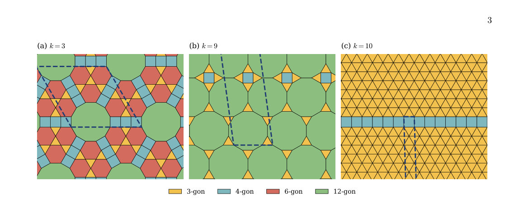
<figcaption class="paper-figure-caption"><b>Fig 1.</b> FIG. 1. Examples of k-uniform tilings; the dashed parallelograms are unit cells. (a) A three-uniform tiling with vertex types 2 5(3.42.6) + 2</figcaption>
</figure>
<figure class="paper-figure-card">
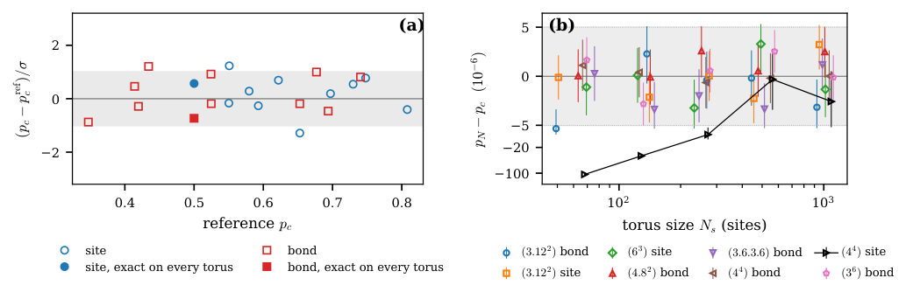
<figcaption class="paper-figure-caption"><b>Fig 2.</b> FIG. 2. (a) Deviation of our thresholds from the 22 Archimedean reference values (exact values and Refs. [16–18, 32]) in units of the combined standard error. Filled symbols: the two thresholds that are exact on every finite torus by self-matching or self-duality, psite c (36) and pbond c (44); they test the statistical errors only. The shaded band is ±1σ. (b) Finite-size estimates pN of Eq. (2) minus the reference value for eight Archimedean thresholds, as a function of the torus size; the vertical axis is linear for |pN −pc| &lt; 5 × 10−6 and logarithmic beyond. Only the square-lattice site threshold (connected symbols) shows a visible correction.</figcaption>
</figure>
<figure class="paper-figure-card">
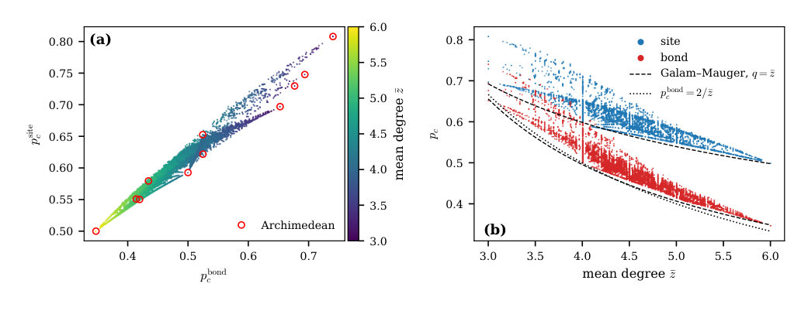
<figcaption class="paper-figure-caption"><b>Fig 3.</b> FIG. 3. (a) Site versus bond threshold for all 23 396 tilings with k ≤10, colored by the mean degree ¯z; circles mark the Archimedean lattices. (b) Site (blue) and bond (red) thresholds versus ¯z, with the Galam–Mauger formula [40] evaluated at q = ¯z (dashed) and the rule pbond c = 2/¯z [39] (dotted). The vertical streaks, e.g., at ¯z = 4 and 5, are tilings with a single vertex degree.</figcaption>
</figure>
<figure class="paper-figure-card">
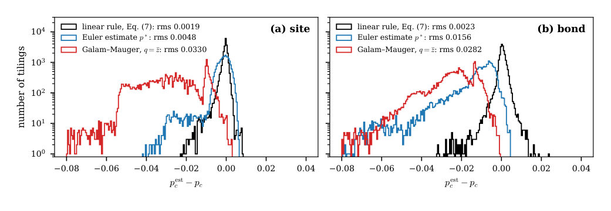
<figcaption class="paper-figure-caption"><b>Fig 4.</b> FIG. 4. Distribution of the errors of empirical estimates over the 23 153 hold-out tilings with k ≥5: (a) site, (b) bond. Black: linear rule, Eq. (7), fitted on k ≤4; blue: Euler-characteristic estimate p∗of Ref. [34]; red: Galam–Mauger formula [40] at q = ¯z (a few values below −0.08 are not shown).</figcaption>
</figure>
<figure class="paper-figure-card">
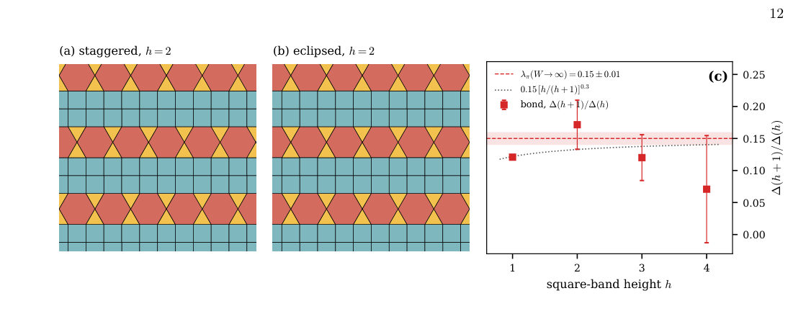
<figcaption class="paper-figure-caption"><b>Fig 5.</b> FIG. 5. (a), (b) The staggered and eclipsed tilings of the slip family with h = 2 rows of squares between the strips of hexagons and triangles; both have the composition 4 7(3.42.6) + 2</figcaption>
</figure>
</div>

<p><strong>Summary.</strong> This work calculates the site and bond percolation thresholds for a vast set of 23,396 regular polygon tilings. Using advanced Monte Carlo simulations on tori, the authors establish precise critical probabilities, confirming consistency with known lattice results and providing new data for complex quasi-periodic structures.</p>
<p><strong>Why it may be interesting.</strong> While focused on classical percolation, the rigorous statistical mechanics techniques (Monte Carlo, critical exponents, transfer matrices) are foundational to understanding phase transitions in quantum many-body systems.</p>
<details>
<summary>Detailed structure</summary>
<p><strong>Main problem.</strong> The paper aims to determine the site and bond percolation thresholds for all 23,396 k-uniform tilings of the plane for k up to 10.</p>
<p><strong>Main result.</strong> The authors provide calculated thresholds for these tilings, showing high precision for k&lt;=4 and demonstrating how vertex-type fractions predict thresholds for higher k.</p>
<p><strong>Method.</strong> The primary method involves Monte Carlo simulations on tori using the critical-polynomial criterion, which compares the probabilities of no wrapping versus cross-wrapping clusters.</p>
<p><strong>Model / system.</strong> The system under study is the plane tiled by regular polygons, specifically focusing on k-uniform tilings. These tilings are analyzed using percolation theory concepts.</p>
<p><strong>Key observables.</strong> Site and bond percolation thresholds (p_c), probabilities of cluster wrapping (P_0(p) and P_+(p)).</p>
<p><strong>Important parameters / regimes.</strong> The number of polygons k (up to 10), the size of the torus (N_s), and the percolation probability p.</p>
<p><strong>Assumptions / limitations.</strong> The critical criterion relies on the equality of probabilities of no wrapping and cross-wrapping cluster, and the analysis assumes the critical model on a torus approaches isotropic critical percolation.</p>
<p><strong>Figures summary.</strong> Figures illustrate examples of k-uniform tilings (k=3, 9, 10) and compare calculated thresholds against known Archimedean reference values.</p>
<p><strong>Paper structure.</strong> The paper details the methodology using Monte Carlo simulations on tori, presents the results for k&lt;=4 reproducing known values, and discusses the extrapolation and analysis for k&gt;=5 based on vertex-type fractions.</p>
</details>
<details>
<summary>Abstract</summary>
<p>We determine the site and bond percolation thresholds of all 23,396 $k$-uniform tilings of the plane by regular polygons with $k\le 10$, the complete set according to the known enumeration. We use Monte Carlo simulation on tori and the condition that no wrapping and a cross-wrapping cluster are equally probable, the Monte Carlo form of the critical-polynomial criterion, which needs no knowledge of the large-scale anisotropy that most of these lattices have. The 486 thresholds with $k\le4$ have uncertainties of a few units in the sixth decimal and reproduce the 22 Archimedean reference values (rms deviation 0.71 standard errors) and unpublished bond thresholds of the 20 two-uniform lattices ($χ^2=19.5$ for 20 values); the others have median statistical uncertainties of $2\times10^{-5}$ ($k\le7$) to $7\times10^{-5}$ ($k\ge8$) and no detectable finite-size bias. The vertex-type fractions alone fix the thresholds for $k\ge5$ to about $2\times10^{-3}$ (linear rule fitted on $k\le4$), while tilings with equal composition differ by up to $6\times10^{-3}$ (site) and $2\times10^{-2}$ (bond). In the range of domain sizes covered, descriptors of radius one account for more than half of this difference, and stackings of identical strips have thresholds linear in the fraction of each boundary type. For tilings that differ only by the registry of strips separated by $h$ rows of squares, the bond threshold difference decreases by a factor of 6-8 per row, comparable to the leading momentum-$π$ eigenvalue of the square-band transfer matrix.</p>
</details>
<p><sub><a href="#top">↑ back to top</a></sub></p>

<p><a id="paper-2610.31500"></a></p>
<h3 id="the-impact-of-markovian-errors-on-random-circuits"><a href="http://arxiv.org/abs/2610.31500v1">The Impact of Markovian Errors on Random Circuits</a></h3>
<p><strong>Authors:</strong> Anthony M. Polloreno, Timothy Proctor, Robin Blume-Kohout<br>
<strong>Type:</strong> theory · <strong>Category:</strong> quantum information and computing · <strong>PDF:</strong> <a href="https://arxiv.org/pdf/2610.31500v1">https://arxiv.org/pdf/2610.31500v1</a><br>
<strong>Analysis basis:</strong> full PDF text, analyzed in chunks
<strong>Topic relevance:</strong> <code>correlated / nonlocal dissipation</code> <strong>1/5</strong> · <code>methods for driven-dissipative</code> <strong>1/5</strong></p>
<div class="figure-strip-hint">↔ Scroll figures horizontally</div>
<div class="paper-figures-scroll">
<figure class="paper-figure-card">
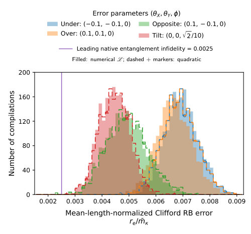
<figcaption class="paper-figure-caption"><b>Fig 1.</b> FIG. 1: How one-qubit Clifford RB error rates depend on compi- lation for four coherent native-gate error models. Filled histograms use the exact compiled-Clifford L matrix, while dashed step curves and markers use the quadratic formula derived in Sec. VI and Ap- pendix B. Each distribution shows re/ ¯mκ for 2000 random compi- lations of the 24 single-qubit Cliffords into native Xπ/2 and Yπ/2 se- quences of length at most five, where ¯mκ is the compilation’s mean native-gate count. We normalize re by ¯mκ because it is useful for comparison; this does not imply that the normalized value is a for- mal native-gate error rate. The vertical line is the common lead- ing native-gate entanglement...</figcaption>
</figure>
<figure class="paper-figure-card">
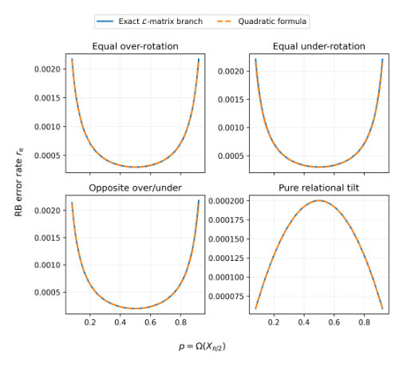
<figcaption class="paper-figure-caption"><b>Fig 2.</b> FIG. 2: Direct RB error rate re versus p = ΩX for the same four coherent error models shown in Fig. 1, but with all amplitudes re- duced by a factor of five: |θX| = |θY| = 0.02 for the first three mod- els and ϕ = √</figcaption>
</figure>
<figure class="paper-figure-card">

<figcaption class="paper-figure-caption"><b>Fig 3.</b> Figure 1 shows that the normalized rates vary signifi- cantly across compilations. Although all four models have the same leading-order native-gate entanglement infidelity, the opposite-sign over/under-rotation model and the pure-tilt model generate significantly different histograms, while the equal-over/equal-under quadratic estimates coincide and their exact distributions differ at higher order. Unambiguously, the Clifford RB error rate is not a weighted average of native- gate infidelities. It is sensitive to finer, gauge-invariant struc- ture in the coherent error model, and that sensitivity is filtered through the compilation. We are therefore motivated to ask what property of the...</figcaption>
</figure>
<figure class="paper-figure-card">

<figcaption class="paper-figure-caption"><b>Fig 4.</b> FIG. 3: Ordered eigenvalues of the reduced FOGI quadratic form QDRB(p) in Eq. (73), shown on a logarithmic vertical scale and trun- cated to p ∈[0.01, 0.99]. The largest coefficient diverges as the ideal moment gap closes at either endpoint, showing that the fixed- p perturbative expansion is nonuniform. The exact RB rate remains bounded, and the other two coefficients vanish because their modes require both gates.</figcaption>
</figure>
<figure class="paper-figure-card">
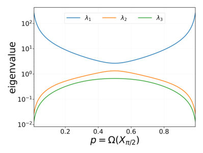
<figcaption class="paper-figure-caption"><b>Fig 5.</b> Figure 3 shows the ordered eigenvalues of QDRB(p) on a logarithmic vertical scale. As p →0 or 1, the largest coeffi- cient diverges while the other two vanish. This describes the nonuniform conditioning of the local quadratic expansion as the ideal mixing gap closes; it should not be interpreted as a divergent exact error rate.</figcaption>
</figure>
</div>

<p><strong>Summary.</strong> This paper develops a theoretical framework to correctly interpret the error rate measured by Randomized Benchmarking (RB) when noise is complex and gate-dependent. By modeling noise using small Markovian generators, the authors show that the error rate decomposes into distinct, physically meaningful contributions (linear from Pauli noise, quadratic from Hamiltonian noise). This allows experimentalists to extract elementary error parameters from a single measured decay rate.</p>
<p><strong>Why it may be interesting.</strong> This work provides a rigorous theoretical framework for interpreting experimental quantum characterization tools like RB, linking abstract decay parameters to physically measurable, gauge-invariant error components relevant for designing fault-tolerant quantum computation.</p>
<details>
<summary>Detailed structure</summary>
<p><strong>Main problem.</strong> The primary challenge is interpreting the error rate measured by Randomized Benchmarking (RB) when the underlying noise is gate-dependent, as the naive average infidelity fails to capture the true error structure.</p>
<p><strong>Main result.</strong> The analysis shows that Pauli-stochastic errors contribute linearly to the RB decay parameter, while Hamiltonian errors contribute through a gauge-invariant quadratic form. These results allow RB decay rates to be expressed as interpretable functions of elementary error rates.</p>
<p><strong>Method.</strong> The authors perturb the RB decay matrix by modeling noisy gates using small, gate-local Markovian error generators and employing First-Order Gauge-Invariant (FOGI) coordinates to maintain physical interpretability.</p>
<p><strong>Model / system.</strong> The study analyzes quantum processors characterized by specific gate sets (e.g., $\{X\pi/2, Y\pi/2\}$) subjected to small, gate-local Markovian noise, modeled via Lindbladian error generators.</p>
<p><strong>Key observables.</strong> The RB decay parameter ($r$), the quadratic form $Q^{(2)}_{	ext{CRB}}$, and the error rate $D_{	ext{CRB}}$.</p>
<p><strong>Important parameters / regimes.</strong> The small error regime (perturbative expansion), the sampling distribution parameters ($\Omega_X$), and the structure of the error generators (Hamiltonian, Pauli-stochastic, etc.).</p>
<p><strong>Assumptions / limitations.</strong> The analysis is restricted to the perturbative regime of small gate-local Markovian noise, and the error process is assumed to be Markovian.</p>
<p><strong>Figures summary.</strong> Figures illustrate how the measured RB error rates depend non-trivially on the sampling distribution and the specific error model, showing deviations from simple weighted-infidelity heuristics.</p>
<p><strong>Paper structure.</strong> The paper develops the theory by first analyzing the structure of the error generators, deriving the linear and quadratic contributions to the decay parameter, and finally applying this framework to specific gate sets to derive explicit, gauge-invariant error formulas.</p>
</details>
<details>
<summary>Abstract</summary>
<p>Randomized benchmarking (RB) returns a single decay parameter or gate error rate, but when the noise is gate-dependent that parameter is notoriously difficult to interpret. We study RB and related random-circuit benchmarks under small gate-local Markovian noise by factorizing each noisy gate into its ideal action followed by the exponential of a small error generator and then perturbing the RB $\mathscr{L}$ matrix, which models the RB decay. For any low-error gate set that satisfies the requirements of RB (it is a sequence-asymptotic unitary 2-design), we show that Pauli-stochastic error rates contribute linearly to the RB decay parameter, while Hamiltonian error rates contribute through a gauge-invariant quadratic form. Pauli-correlation and active generators are absent from the linear term and enter only at higher order. For the single-qubit native gate set $\{X_{π/2},Y_{π/2}\}$ we derive this quadratic form explicitly in terms of three first-order gauge-invariant (FOGI) coordinates: the two intrinsic over-rotations and one relational axis-tilt error. The resulting formula explains the dependence of DRB on the sampling distribution and the compilation dependence of CRB. These results turn RB decay rates into interpretable functions of experimentally meaningful elementary error rates.</p>
</details>
<p><sub><a href="#top">↑ back to top</a></sub></p>

<p><a id="paper-2610.31260"></a></p>
<h3 id="can-entanglement-induced-feature-map-designs-improve-projected-quantum-kernels"><a href="http://arxiv.org/abs/2610.31260v1">Can Entanglement-Induced Feature-Map Designs Improve Projected Quantum Kernels?</a></h3>
<p><strong>Authors:</strong> Ravi Kumar Jha, Hsuan-Yin Lin, Eirik Rosnes<br>
<strong>Type:</strong> theory · <strong>Category:</strong> quantum information and computing · <strong>PDF:</strong> <a href="https://arxiv.org/pdf/2610.31260v1">https://arxiv.org/pdf/2610.31260v1</a><br>
<strong>Analysis basis:</strong> full PDF text, analyzed in chunks
<strong>Topic relevance:</strong> <code>quantum measurements</code> <strong>1/5</strong></p>
<div class="figure-strip-hint">↔ Scroll figures horizontally</div>
<div class="paper-figures-scroll">
<figure class="paper-figure-card">
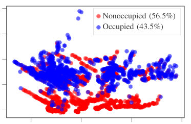
<figcaption class="paper-figure-caption"><b>Fig 1.</b> Fig. 1. An illustration of the complex class separation of IoT data using PCA.</figcaption>
</figure>
<figure class="paper-figure-card">

<figcaption class="paper-figure-caption"><b>Fig 2.</b> Fig. 3. Schematic diagram of the distinct feature maps used for PQKs: (a) Rot(X), a single qubit RX rotation, inspired the designing of (e) Rot(X)en, Rot(X) with a specific pair of entanglement; (b) Rot(X, Y, Z), RX, RY, RZ rotations; (c) IQP, standard design, for simplicity, only an n = 3 qubits circuit is shown; (d) Rot(X, Y, Z)+CNOT, Rot(X, Y, Z) with circular entanglement, conceptually formed (f) Rot(X, Y, Z)en, with a specific pair of entanglement.</figcaption>
</figure>
<figure class="paper-figure-card">

<figcaption class="paper-figure-caption"><b>Fig 3.</b> Fig. 4. Sensitivity analysis of PQK and RBF hyperparameter tuning.</figcaption>
</figure>
</div>

<p><strong>Summary.</strong> This work investigates Projected Quantum Kernels (PQKs) for machine learning, aiming to prove that the inherent structure of the quantum feature map, particularly those incorporating entanglement, dictates the true representational power. By comparing tuned versus untuned models, the authors demonstrate that carefully designed entanglement topologies provide a stronger, native inductive bias for data separation than what can be achieved through classical hyperparameter optimization alone.</p>
<p><strong>Why it may be interesting.</strong> It directly addresses the practical application of quantum circuits in machine learning, showing how the <em>structure</em> of the quantum circuit (entanglement topology) can encode physical information that surpasses what is achievable merely by optimizing classical parameters.</p>
<details>
<summary>Detailed structure</summary>
<p><strong>Main problem.</strong> To improve Projected Quantum Kernels (PQKs) by exposing their native inductive bias, moving beyond reliance on extensive classical hyperparameter tuning.</p>
<p><strong>Main result.</strong> Novel quantum feature maps leveraging two-qubit entanglement can yield structurally better PQKs, suggesting that superior quantum architectural design provides improvements arising from quantum-mechanical properties rather than classical tuning.</p>
<p><strong>Method.</strong> The study compares the performance of PQKs using various quantum feature maps against an RBF baseline, analyzing the impact of tuning hyperparameters ($\gamma$ and $\xi$) on classification accuracy for IoT data.</p>
<p><strong>Model / system.</strong> The system uses Quantum Machine Learning (QML) employing Projected Quantum Kernels (PQKs) to classify IoT data. The process involves encoding classical inputs into quantum states via feature maps and projecting them into a classical feature space via Pauli observable measurements.</p>
<p><strong>Key observables.</strong> Accuracy, F1-score, Matthews Correlation Coefficient (MCC), and the kernel values $\kappa_{PQK}(x, x')$.</p>
<p><strong>Important parameters / regimes.</strong> Kernel hyperparameter $\gamma$, SVM regularization parameter $\xi$, and the structure of the quantum feature map (e.g., single-qubit vs. two-qubit entanglement).</p>
<p><strong>Assumptions / limitations.</strong> PQKs mitigate the exponential dimensionality issue of standard quantum kernels by projecting into a lower-dimensional space, but the study assumes that structural design can reveal inherent quantum advantages.</p>
<p><strong>Figures summary.</strong> Figures illustrate the PQK architecture (mapping $
ightarrow$ quantum space $
ightarrow$ measurement $
ightarrow$ classical space) and compare performance metrics (Table II) across different feature maps and tuning regimes.</p>
<p><strong>Paper structure.</strong> The paper introduces the PQK framework, details the methodology involving various entanglement-based feature maps, compares performance against classical baselines (RF, RBF), and analyzes the sensitivity of the results to classical hyperparameter tuning.</p>
</details>
<details>
<summary>Abstract</summary>
<p>Projected quantum kernels (PQKs) have emerged as a notable approach to circumvent the hardness of machine learning tasks arising from the exponential dimensionality of the quantum Hilbert space. However, recent PQK studies often rely heavily on extensive classical hyperparameter tuning of the radial basis function (RBF) kernel parameter and the support vector machine regularization parameter. The extensive tuning can mask the true representational power of the underlying PQKs induced by quantum feature maps, which has not been explored in detail. Thus, this work aims to expose the structural capabilities of PQKs by isolating and evaluating their native inductive bias through comparisons between untuned and tuned PQKs against the RBF baseline. Furthermore, we propose novel quantum feature maps that leverage two-qubit entanglement to capture multivariate correlations in IoT data. The results show that extensive tuning can lead to competitive performance architectures, while our proposed entanglement topologies exhibit a significantly stronger native inductive bias. This reveals that superior quantum architectural design can yield structurally better PQKs with improvements arising from quantum-mechanical properties rather than from classical hyperparameter tuning.</p>
</details>
<p><sub><a href="#top">↑ back to top</a></sub></p>

<p><a id="paper-2610.31443"></a></p>
<h3 id="conqec-concolic-testing-for-quantum-error-correcting-code-implementations"><a href="http://arxiv.org/abs/2610.31443v1">ConQEC: Concolic Testing for Quantum Error-Correcting Code Implementations</a></h3>
<p><strong>Authors:</strong> Zihao Li, Ji Guan, Mingsheng Ying<br>
<strong>Type:</strong> both · <strong>Category:</strong> quantum information and computing · <strong>PDF:</strong> <a href="https://arxiv.org/pdf/2610.31443v1">https://arxiv.org/pdf/2610.31443v1</a><br>
<strong>Analysis basis:</strong> full PDF text, analyzed in chunks
<strong>Topic relevance:</strong> <code>QC/QI experiment</code> <strong>1/5</strong></p>
<div class="figure-strip-hint">↔ Scroll figures horizontally</div>
<div class="paper-figures-scroll">
<figure class="paper-figure-card">

<figcaption class="paper-figure-caption"><b>Fig 1.</b> Fig. 2. Repair-path bug in the three-bit repetition code. For fault X@q0, both programs reach syndrome (1, 0); the first divergence is decoder, where the reference selects X@q0 and the buggy implementation selects X@q1.</figcaption>
</figure>
<figure class="paper-figure-card">

<figcaption class="paper-figure-caption"><b>Fig 2.</b> Figure 2 shows the example as a small syndrome schematic and paired pseudocode. Reading Figure 2 from top to bottom, encodeRep3 is the encoding stage. We write P@qi for applying Pauli operator P at physical qubit qi. The Pauli- X operator is the quantum analogue of a NOT gate: the kets |0⟩and |1⟩denote the two standard basis states of a qubit, corresponding to classical 0 and 1, and X swaps them. Thus X@q0 in the fault stage denotes a bit-flip fault on q0. A syndrome is the pattern of check outcomes used to diagnose the fault. Here, each syndrome bit says whether one neighboring-qubit parity check is violated; the pair (s0, s1) is analogous to check bits in a classical error-correcting...</figcaption>
</figure>
<figure class="paper-figure-card">

<figcaption class="paper-figure-caption"><b>Fig 3.</b> Fig. 3. ConQEC workflow: symbolic repair-path constraints propose Pauli faults, and paired replay turns them into semantic coverage and FSDR bug witnesses.</figcaption>
</figure>
<figure class="paper-figure-card">

<figcaption class="paper-figure-caption"><b>Fig 4.</b> Fig. 4. RQ2 semantic-coverage profile on the repetition-code scale ladder. The x-axis is the test budget B on a log2 scale, including the clean seed. Columns vary n = 10, 100, 1000; rows report measurement-outcome, stabilizer-condition, pair-mask, and transition-sequence coverage. Random fault testing is averaged over 30 seeds with 95% confidence intervals. Pair-mask is shown separately as a representative hard sublayer of stabilizer-condition coverage.</figcaption>
</figure>
<figure class="paper-figure-card">

<figcaption class="paper-figure-caption"><b>Fig 5.</b> Figure 4 compares the methods under all three criteria, with pair-mask reported separately as a representative hard sublayer. On measurement-outcome coverage, random testing remains competitive: valid weight-2 samples quickly exercise both Boolean outcomes for many exposed checks. By the ends of the plotted campaigns, ConQEC reaches full stabilizer- condition coverage at all three scales, while random testing falls behind as n grows. Transition-sequence coverage shows a similar separation at larger n. To examine the stabilizer-condition results more closely, the figure reports pair-mask separately. Each check is counted once when paired replay confirms faults on both support qubits (µc(F) =...</figcaption>
</figure>
</div>

<p><strong>Summary.</strong> This paper introduces ConQEC, a novel concolic testing framework designed to rigorously test Quantum Error-Correcting Code (QECC) implementations. It moves beyond simple failure detection by generating concrete faults and providing a detailed, localized diagnostic witness (FSDR) pinpointing the exact stage of failure in the error-correction pipeline. This approach scales to thousands of qubits by using symbolic constraints over the discrete repair path rather than full quantum state simulation.</p>
<p><strong>Why it may be interesting.</strong> While focused on software verification, the scalability demonstrated for large-scale quantum systems and the rigorous diagnostic output (pinpointing the exact failure stage) are highly relevant for debugging complex quantum hardware control stacks.</p>
<details>
<summary>Detailed structure</summary>
<p><strong>Main problem.</strong> Developing a scalable testing workflow for Quantum Error-Correcting Code (QECC) implementations that can pinpoint the exact stage where a repair path fails, rather than just detecting a final logical error.</p>
<p><strong>Main result.</strong> The ConQEC framework successfully detects seeded bugs in large-scale QECC artifacts (thousands of qubits) and provides a detailed, replay-valid Fault–Syndrome–Decoder–Recovery (FSDR) witness for localization.</p>
<p><strong>Method.</strong> It employs concolic testing by combining concrete Pauli fault replay with symbolic constraint solving over the QECC repair path stages (fault, syndrome, decoder, recovery).</p>
<p><strong>Model / system.</strong> The system under test is a QECC implementation, modeled as a hybrid software-control pipeline that processes injected Pauli faults to restore logical quantum information.</p>
<p><strong>Key observables.</strong> Fault-Syndrome-Decoder-Recovery (FSDR) diagnostics, Pair-Mask Coverage, and the earliest divergent stage ($\delta$) in the repair path.</p>
<p><strong>Important parameters / regimes.</strong> The framework scales to thousands of qubits, overcoming the exponential state space limitations of amplitude-level quantum testing.</p>
<p><strong>Assumptions / limitations.</strong> The method assumes the ability to define compact, symbolic constraints over the discrete stages of the QECC repair path, and requires access to a reference contract for comparison.</p>
<p><strong>Figures summary.</strong> Figures illustrate the basic QECC correction process (Encode $
ightarrow$ Fault $
ightarrow$ Syndrome $
ightarrow$ Decode $
ightarrow$ Recover $
ightarrow$ Restore), and show comparisons of coverage metrics between ConQEC and random testing across increasing qubit numbers.</p>
<p><strong>Paper structure.</strong> The paper introduces the problem of QECC testing, details the ConQEC concolic framework by defining the symbolic constraints over the FSDR path, demonstrates its application to generate fault-localizing witnesses, and validates its scalability on large-scale and public artifacts.</p>
</details>
<details>
<summary>Abstract</summary>
<p>Quantum error-correcting code (QECC) implementations are hybrid software-control systems: measured syndromes drive decoder dispatch, recovery actions, and logical checks. Existing QECC verification techniques can prove formal obligations, and general quantum testing can expose final failures, but developers still lack a scalable testing workflow that generates concrete faults and explains where a QECC repair path first diverges. This paper presents ConQEC, to our knowledge the first concolic testing framework for QECC implementations. By combining concrete (Pauli) fault replay with symbolic repair-path constraints, ConQEC generates tests that expose not only final logical failures but also fault--syndrome--decoder--recovery (FSDR) diagnostics: the injected fault, observed syndrome, decoder decision, recovery action, oracle result, and earliest divergent stage. Its symbolic encoding of Pauli faults, syndrome predicates, decoder and recovery relations, and oracle checks enables this diagnostic workflow to scale beyond exponentially increasing amplitude-level quantum-state reasoning. We implemented ConQEC and evaluated it on generated source-level QECC families and public QECC artifacts with up to thousands of qubits. ConQEC detects the seeded bug in every experimental case and reports a replay-valid, fault-localizing FSDR witness for each.</p>
</details>
<p><sub><a href="#top">↑ back to top</a></sub></p>

<p><a id="paper-2610.30242"></a></p>
<h3 id="defect-flows-from-functional-relations-in-the-asymptotic-semiring"><a href="http://arxiv.org/abs/2610.30242v1">Defect flows from functional relations in the asymptotic semiring</a></h3>
<p><strong>Authors:</strong> Federico Ambrosino, Anatoly Konechny, Ingo Runkel, Gérard M. T. Watts<br>
<strong>Type:</strong> theory · <strong>Category:</strong> other · <strong>PDF:</strong> <a href="https://arxiv.org/pdf/2610.30242v1">https://arxiv.org/pdf/2610.30242v1</a><br>
<strong>Analysis basis:</strong> full PDF text, analyzed in chunks
<strong>Topic relevance:</strong> <code>analog quantum simulation</code> <strong>1/5</strong></p>
<div class="figure-strip-hint">↔ Scroll figures horizontally</div>
<div class="paper-figures-scroll">
<figure class="paper-figure-card">

<figcaption class="paper-figure-caption"><b>Fig 1.</b> Figure 1: The functions as(θ) and the value of D∞ s (θ) of the solution Xs in M(4, 9) plotted against θ. The vertical lines in the plots indicate the angles θ∗ s of the anti-Stokes rays. Note that X2 and X7 only have a single anti-Stokes ray at θ = ±π, while X3, . . . , X6 have two anti-Stokes rays.</figcaption>
</figure>
<figure class="paper-figure-card">

<figcaption class="paper-figure-caption"><b>Fig 2.</b> Figure 2: The functions as(θ) and the value of D∞ s (θ) of the solution Xs in M(5, 9) plotted against θ. Compared to Figure 1, now X2, X7 also feature two anti-Stokes rays.</figcaption>
</figure>
<figure class="paper-figure-card">

<figcaption class="paper-figure-caption"><b>Fig 3.</b> Figure 3: String diagram computation showing (2.42) componentwise.</figcaption>
</figure>
<figure class="paper-figure-card">

<figcaption class="paper-figure-caption"><b>Fig 4.</b> Figure 4: Asymptotic defects/exponents and Hirota equation for s = 2, . . . , 7 in M(4, 9). In the Hirota plots we give the asymptotic exponentials of the left hand side (solid light blue) and right hand side (maximum of the dashed red line and the dashed gray zero) of the Hirota equation. Write xs(θ) for the asymptotic exponent of Xs. For s = 4, 5 and |θ| &lt; 2π</figcaption>
</figure>
<figure class="paper-figure-card">

<figcaption class="paper-figure-caption"><b>Fig 5.</b> Figure 5: Asymptotic defects/exponents in M(5, 12).</figcaption>
</figure>
</div>

<p><strong>Summary.</strong> This theoretical paper investigates how the algebraic structure governing topological defects in 2D CFTs constrains their evolution under a renormalization group flow. By mapping the defect fusion rules into a specialized 'asymptotic semiring,' the authors derive exact functional relations that predict the stable, infrared endpoint of the defect flow. This provides a powerful algebraic tool for analyzing quantum field theory dynamics.</p>
<p><strong>Why it may be interesting.</strong> While highly abstract, the concept of using algebraic structures (semirings) to constrain the long-distance behavior of quantum field theories is relevant to understanding stability and fixed points in any interacting quantum system, including those modeled by AMO physics.</p>
<details>
<summary>Detailed structure</summary>
<p><strong>Main problem.</strong> The paper aims to use the algebraic structure of translation invariant defects (TIDs) to constrain or predict the final topological defect reached during a renormalization group (RG) flow in 2D CFTs.</p>
<p><strong>Main result.</strong> The RG flow is shown to define a semiring homomorphism from the fusion rule semiring of TIDs to an 'asymptotic semiring,' which imposes functional relations that fix the flow endpoints.</p>
<p><strong>Method.</strong> The approach involves constructing the asymptotic semiring and mapping the defect fusion rules onto it via a homomorphism, allowing algebraic constraints to replace solving differential/integral flow equations.</p>
<p><strong>Model / system.</strong> The study is set in two-dimensional Conformal Field Theories (CFTs), specifically analyzing the RG flow of topological defects perturbed by a relevant holomorphic defect field, often exemplified by Virasoro minimal models.</p>
<p><strong>Key observables.</strong> The asymptotic defect operators $D_\infty(	heta)$ and the associated real parameters $a(	heta)$ that define the elements of the asymptotic semiring.</p>
<p><strong>Important parameters / regimes.</strong> The conformal weight $h$ of the perturbing field ($\psi$), and the CFT parameters defining the minimal models, such as $(p, q)$ for $M(p, q)$.</p>
<p><strong>Assumptions / limitations.</strong> The analysis assumes $\alpha$-asymptotics for the perturbed defects and relies on the convergence of iterated integrals of the perturbing field.</p>
<p><strong>Figures summary.</strong> Figures illustrate the solutions $D_\infty^s(	heta)$ and $a_s(	heta)$ for specific minimal models, highlighting the dependence on the angle $   heta$ and the number of anti-Stokes rays.</p>
<p><strong>Paper structure.</strong> The paper develops the mathematical framework by defining the asymptotic semiring, establishing the semiring homomorphism from the defect fusion rules, and then applying this machinery to specific examples like the Lee-Yang CFT and general minimal models to derive constraints on the flow endpoints.</p>
</details>
<details>
<summary>Abstract</summary>
<p>We study perturbations of topological defects by a relevant holomorphic defect field in two-dimensional conformal field theory. This produces translation invariant defects and these necessarily flow to topological defects in the infrared. Translation invariant defects form a monoidal category which extends the fusion category of topological defects. We argue that the renormalisation group flow defines a semiring homomorphism from the semiring of translation invariant defects to an "asymptotic semiring" which we construct from topological defects. The semiring homomorphism preserves functional relations, and we illustrate in the example of Virasoro minimal models that the resulting relations in the asymptotic semiring constrain the defect flow endpoints. The companion paper [1] contains a detailed study of such defect flows in several minimal models, both numerically and analytically.</p>
</details>
<p><sub><a href="#top">↑ back to top</a></sub></p>

<p><a id="paper-2610.30645"></a></p>
<h3 id="fvqkd-a-formal-verification-of-quantum-key-distribution-security-in-rocq"><a href="http://arxiv.org/abs/2610.30645v1">FVQKD: A Formal Verification of Quantum Key Distribution Security in Rocq</a></h3>
<p><strong>Authors:</strong> Ruixuan Deng, Zhengfeng Ji, Jiayu Zhang, Li Zhou<br>
<strong>Type:</strong> theory · <strong>Category:</strong> quantum information and computing · <strong>PDF:</strong> <a href="https://arxiv.org/pdf/2610.30645v1">https://arxiv.org/pdf/2610.30645v1</a><br>
<strong>Analysis basis:</strong> full PDF text, analyzed in chunks
<strong>Topic relevance:</strong> <code>quantum measurements</code> <strong>1/5</strong></p>
<div class="figure-strip-hint">↔ Scroll figures horizontally</div>
<div class="paper-figures-scroll">
<figure class="paper-figure-card">

<figcaption class="paper-figure-caption"><b>Fig 1.</b> Fig. 1. BB84 finite-key budget (schematic; bar lengths are illustrative). Sifting leaves N = n+k matching-basis rounds: k Z-basis rounds estimate the QBER λ, and n X-basis rounds form the raw keys X, X′. Error correction reveals leakEC + ⌈log2 1/εc⌉bits; privacy amplification produces the ℓ-bit εs-secret key S. Hatching denotes terms deducted in (1), not literal key substrings.</figcaption>
</figure>
<figure class="paper-figure-card">

<figcaption class="paper-figure-caption"><b>Fig 2.</b> Fig. 3. Module dependency graph. The structure mirrors the proof sketch of Section III-C: eur and lhl are mutually independent; inside qkd, bb84 depends on the lower proof modules, and example depends on both the protocol language in protocol and the BB84 theorem layer in bb84.</figcaption>
</figure>
<figure class="paper-figure-card">

<figcaption class="paper-figure-caption"><b>Fig 3.</b> Fig. 4. Proof-dependency graph for the BB84 security proof. Each box names a source-paper theorem, lemma, or proof topic together with the corresponding Rocq declaration name(s). Node prefixes identify the source literature: bb84 is Tomamichel–Lim–Gisin–Renner’s finite-key BB84 proof [10], eur is Tomamichel–Renner’s smooth entropic uncertainty relation [95], and ent is Tomamichel’s entropy framework/thesis [65]; the source-paper prefix and TeX label are separated by a slash. An arrow A→B means A supports the proof of B. Every arrow is a dependency in the Rocq proofs; lighter arrows cross between branches of the proof tree. The top layer identifies bb84_secure as the combined theorem of...</figcaption>
</figure>
</div>

<p><strong>Summary.</strong> This paper introduces FVQKD, a novel framework for formally verifying the security of Quantum Key Distribution (QKD) protocols using the Rocq proof assistant. It achieves the first end-to-end, machine-checked proof of security for BB84, grounding the information-theoretic security bound in formal semantics. This work significantly advances the reliability of quantum cryptography by replacing manual proofs with rigorous, machine-checkable mathematics.</p>
<p><strong>Why it may be interesting.</strong> While focused on QKD, the rigorous formalization of quantum information theory, including the mechanization of entropy bounds and uncertainty relations, provides foundational tools applicable to verifying security in other quantum information protocols.</p>
<details>
<summary>Detailed structure</summary>
<p><strong>Main problem.</strong> The primary goal is to establish a trustworthy, systematic, and machine-checked foundation for Quantum Key Distribution (QKD) security proofs, overcoming the limitations of hand-checked arguments.</p>
<p><strong>Main result.</strong> The authors present FVQKD, the first end-to-end formal verification of a QKD security proof, providing a machine-checked proof of composable, finite-key security for the BB84 protocol.</p>
<p><strong>Method.</strong> The work employs formal verification using the Rocq library to mechanize the entire proof infrastructure, relying on advanced tools like the smooth entropy framework and the Quantum Leftover Hash Lemma.</p>
<p><strong>Model / system.</strong> The system modeled is Quantum Key Distribution (QKD), using the BB84 protocol as the case study. Security is derived from fundamental quantum mechanics principles, not computational assumptions.</p>
<p><strong>Key observables.</strong> Composable, finite-key $\epsilon$-security statement; information-theoretic security bounds; positive-pass probability and mismatch probabilities.</p>
<p><strong>Important parameters / regimes.</strong> The proof relies on specific parameters for hashing and security bounds, such as $\epsilon = 2^{-34}$ and key lengths derived from optimized witnesses.</p>
<p><strong>Assumptions / limitations.</strong> The security proof assumes the existence of a certified ideal device and relies on the formalization of the mathematical security bound itself, rather than just protocol message flows.</p>
<p><strong>Figures summary.</strong> Table I compares FVQKD against prior work across five criteria (UQA, Comp., FK, Model, E2E), claiming superiority in achieving all five. Table VI details the expansion of various constructors and structural classes.</p>
<p><strong>Paper structure.</strong> The paper is structured by first establishing quantum foundations, then detailing the composable security model and finite-key bound, followed by protocol modeling, the proof architecture, and finally, the detailed proof engineering and verification findings.</p>
</details>
<details>
<summary>Abstract</summary>
<p>Quantum key distribution (QKD), whose security is derived from quantum mechanics rather than computational assumptions, is moving into standardization and commercial deployment. Yet its security guarantees rest on technically delicate proofs checked by hand. Formal verification closes this gap, establishing a two-factor assurance: unconditional security from physical principles, and machine-checked proofs against reasoning errors. We present FVQKD, a Rocq library for machine-checking QKD security proofs. Its first result is a complete, end-to-end machine-checked proof of composable, finite-key security for BB84. The mechanization reconstructs the complete proof infrastructure from first principles, including the smooth entropy framework, the entropic uncertainty relation, and the Quantum Leftover Hash Lemma. It uncovers necessary side conditions that the published argument leaves unstated, one of which reveals a missing proof branch, and it grounds the information-theoretic bound in a formal semantics of protocol execution, which the pen-and-paper analysis lacks. The proof is entirely admit-free, relying only on the Rocq kernel and standard foundational axioms. To our knowledge, this is the first end-to-end formal verification of a QKD security proof. Built on MathComp, MathComp-Analysis, and CoqQ, the development provides quantum-information infrastructure designed for reuse across broader QKD variants and quantum cryptography applications.</p>
</details>
<p><sub><a href="#top">↑ back to top</a></sub></p>

<p><a id="paper-2610.30681"></a></p>
<h3 id="high-fidelity-and-robust-controlled-z-gates-for-superconducting-transmon-qubits-ii-system-parameter-uncertainties-and-overall-errors"><a href="http://arxiv.org/abs/2610.30681v1">High-fidelity and robust controlled-Z gates for superconducting transmon qubits. II. System-parameter uncertainties and overall errors</a></h3>
<p><strong>Authors:</strong> Chia-Hsien Huang, Hsi-Sheng Goan<br>
<strong>Type:</strong> theory · <strong>Category:</strong> quantum information and computing · <strong>PDF:</strong> <a href="https://arxiv.org/pdf/2610.30681v1">https://arxiv.org/pdf/2610.30681v1</a><br>
<strong>Analysis basis:</strong> full PDF text, analyzed in chunks
<strong>Topic relevance:</strong> <code>QC/QI experiment</code> <strong>1/5</strong></p>
<div class="figure-strip-hint">↔ Scroll figures horizontally</div>
<div class="paper-figures-scroll">
<figure class="paper-figure-card">

<figcaption class="paper-figure-caption"><b>Fig 1.</b> FIG. 1. Schematic illustration of the enlargement of the ro- bustness window against noise and system-parameter uncer- tainties. The vertical axis represents the noise standard de- viation, σnoise, and the horizontal axis represents the system- parameter uncertainty, βuty. Gate operations corresponding to parameter combinations (βuty, σnoise) within the green region bounded by the solid green curve have infidelities below the prescribed threshold of 10−3, whereas those outside the solid green curve (pink region) exceed the threshold. Robust con- trol by engineering gate operations less sensitive to parameter variations and noise fluctuations can broaden the robustness window by expanding...</figcaption>
</figure>
<figure class="paper-figure-card">

<figcaption class="paper-figure-caption"><b>Fig 2.</b> FIG. 2. Error contributions arising from the fixed uncertain- ties βω0,A/2π = 1 MHz (a) and βαA/2π = 1 MHz (b) for optimized CZ gates with gate time tf = 12 ns and interac- tion frequency ωi,A/2π ranging from ∼1 to ∼5 GHz. The ideal gate infidelity J1 is evaluated using the ideal Hamilto- nian HI, whereas the realistic gate infidelities I1 and I2 are evaluated using H = HI + Hω0,A in (a) and H = HI + HαA in (b). The single-qubit-Z gate UZ applied after the two-qubit interaction is calibrated using the ideal single-qubit phases for J1 and I1, and the realistic single-qubit phases for I2. The infidelity difference I1 −J1 (pink circles) contains both the single-qubit phase and detuning errors,...</figcaption>
</figure>
<figure class="paper-figure-card">

<figcaption class="paper-figure-caption"><b>Fig 3.</b> FIG. 3. Coupling error suppression. (a) Simulated J2,gAB for βgAB = 2π × 1 MHz using the Pull-Back-Pulse ΦA/B(t) = ΦPBP A/B(t) with a fixed gate time tf = 12 ns and detuning δA/2π varied from −1000 to 500 MHz. (b) Simulated J2,gAB for βgAB = 2π × 1 MHz using ΦA/B(t) = ΦPBP A/B(t) with fixed detunings δA/2π = 0 MHz (purple solid), 200 MHz (purple dash-dotted), and 400 MHz (purple dotted), while varying the gate time tf from 12 to 30 ns. Also shown are the optimized J2,gAB (green circles, βgAB = 2π × 1 MHz) and the optimized J1 (blue triangles) obtained from the optimization based on the cost function J1 + J2,gAB. (c)–(e) Optimized detunings δA(t) (blue solid) and δB(t) (blue dotted) for gate...</figcaption>
</figure>
<figure class="paper-figure-card">

<figcaption class="paper-figure-caption"><b>Fig 4.</b> FIG. 4. Robustness against coupling-constant uncertainty βgAB. (a) Gate infidelity I, excluding noise contributions, as a function of the coupling-constant uncertainty βgAB/2π, over the ranges −10 to −0.1 MHz (left) and 0.1 to 10 MHz (right). Results are presented for optimized CZ gates with gate times tf = 12 ns (blue circles), 20 ns (yellow triangles), 24 ns (green squares), and 30 ns (pink diamonds), implemented on symmet- ric transmons with aEJ = 1.0. (b) Ensemble-averaged gate infidelity ⟨I⟩, obtained from 1000 realizations of flux noise βϕ,A/B(t) with T1 = 30 µs, as a function of βgAB/2π over the interval −4 to 4 MHz. Results are shown for optimized CZ gates with tf = 12 ns (blue...</figcaption>
</figure>
<figure class="paper-figure-card">

<figcaption class="paper-figure-caption"><b>Fig 5.</b> FIG. 5. Detuning error suppression. (a) Detuning errors J2,δA with βδA/2π = 1 MHz (yellow-circle line) and J2,δB with βδB/2π = 1 MHz (purple-triangle line) for the Pull-Back-Pulse ΦA/B(t) = ΦPBP A/B(t) with tf = 12 ns, plotted as functions of the detuning δA varied from −2π × 1000 MHz to 2π × 500 MHz. (b) Optimized detuning errors J2,δA (pink circles) and J2,δB (green squares), together with the ideal gate infidelity J1 (blue triangles), for CZ gates with tf = 12, 20, 24, and 30 ns, ob- tained by minimizing the cost function J1 +J2,δA +J2,δB. The initial detunings and interaction frequencies are δA/B/2π = −214/ −212 MHz and ωi,A/B/2π = 5.0/5.0 GHz, respectively. (c)–(e) Optimized detunings...</figcaption>
</figure>
</div>

<p><strong>Summary.</strong> This paper presents an advanced optimal control framework to design highly robust controlled-Z gates for superconducting transmon qubits. It tackles the challenge of system-parameter uncertainties by implementing distinct error suppression techniques for coupling and detuning errors. The resulting methods offer a practical path to achieving high fidelity gates that are less sensitive to hardware imperfections and require less frequent recalibration.</p>
<p><strong>Why it may be interesting.</strong> This work is highly relevant as it provides actionable, quantitative guidelines for building fault-tolerant quantum hardware by explicitly managing parameter uncertainty, a major bottleneck in scaling superconducting quantum processors.</p>
<details>
<summary>Detailed structure</summary>
<p><strong>Main problem.</strong> The paper addresses the critical challenge of designing controlled-Z (CZ) gates for superconducting transmon qubits that maintain high fidelity despite inherent system-parameter uncertainties and environmental noise.</p>
<p><strong>Main result.</strong> The authors developed a framework combining dynamical decoupling for coupling errors and operating near a symmetric-detuning point for detuning errors, achieving gate fidelities below $10^{-3}$ while tolerating significant parameter variations.</p>
<p><strong>Method.</strong> The methodology extends optimal control theory to incorporate parameter uncertainty Hamiltonians, classifying errors into off-diagonal (coupling) and diagonal (detuning) perturbations, and deriving specific suppression mechanisms for each.</p>
<p><strong>Model / system.</strong> The physical system is superconducting transmon qubits. The analysis involves modeling the CZ gate operation and quantifying errors arising from uncertainties in coupling strength, anharmonicities, and qubit frequencies within the Hamiltonian.</p>
<p><strong>Key observables.</strong> Gate infidelity (target $< 10^{-3}$), coupling error reduction ($6.21 	imes 10^{-7}$ for 30-ns gate), and tolerance to parameter uncertainties (e.g., $2\pi 	imes 4$ MHz for coupling).</p>
<p><strong>Important parameters / regimes.</strong> Gate duration (e.g., 24-ns, 30-ns), uncertainty magnitudes ($eta_{gAB}, \sigma_\delta$), and the operating regime near the symmetric-detuning point.</p>
<p><strong>Assumptions / limitations.</strong> Assumptions include treating uncertainties as normally distributed with zero mean, and using approximations based on the strong coupling limit for error derivations.</p>
<p><strong>Figures summary.</strong> Figure 1 illustrates how robust control expands the parameter space region of low infidelity, while Figure 2 compares error contributions for optimized CZ gates at specific durations.</p>
<p><strong>Paper structure.</strong> The paper builds upon a companion study (Part I) by systematically incorporating parameter uncertainties. It analyzes coupling and detuning errors separately, deriving specific suppression techniques (dynamical decoupling vs. symmetric-detuning point), and finally optimizes performance across multiple hardware improvement stages.</p>
</details>
<details>
<summary>Abstract</summary>
<p>In the companion paper (Part I), we developed an optimal-control framework to suppress intrinsic and decoherence-induced errors in controlled-Z (CZ) gates between directly coupled, frequency-tunable transmons. Here, we extend this framework to incorporate uncertainties in coupling strength, anharmonicities, and zero-flux qubit frequencies, enabling the design of high-fidelity gates robust against noise and parameter uncertainties. We classify these uncertainties by whether they perturb the off-diagonal coupling strengths or the diagonal detunings of the Hamiltonian, and we identify distinct suppression mechanisms for each class. Coupling errors are mitigated through dynamical decoupling induced by strong detuning modulation. For a 30-ns gate, this strategy reduces the coupling error to $6.21\times10^{-7}$ and tolerates coupling-strength uncertainties up to $2π\times4$ MHz while keeping total gate infidelity below $10^{-3}$. Detuning errors are minimized near a symmetric-detuning operating point that balances the two dominant leakage-mediated interactions. A 24-ns gate operated near this point tolerates individual uncertainties of up to $2π\times5$ MHz in each relevant diagonal parameter under the same infidelity threshold. We further optimize gate performance under realistic conditions where intrinsic errors, decoherence, and parameter uncertainties coexist across six representative stages of progressively improving hardware performance. The resulting stage-specific controls achieve lower infidelity and greater robustness. Together with the companion study (Part I), this framework offers a practical approach to balance speed, fidelity, and robustness while reducing the need for exhaustive characterization and frequent recalibration in large-scale superconducting quantum processors.</p>
</details>
<p><sub><a href="#top">↑ back to top</a></sub></p>

<p><a id="paper-2610.31142"></a></p>
<h3 id="interaction-enhanced-antiferromagnetic-correlations-in-a-kondo-ladder-with-a-gapped-band-structure"><a href="http://arxiv.org/abs/2610.31142v1">Interaction-enhanced antiferromagnetic correlations in a Kondo ladder with a gapped band structure</a></h3>
<p><strong>Authors:</strong> Tatsuya Kaneko, Ritsuki Hirabayashi, Yutaka Akagi<br>
<strong>Type:</strong> theory · <strong>Category:</strong> strongly correlated electrons · <strong>PDF:</strong> <a href="https://arxiv.org/pdf/2610.31142v1">https://arxiv.org/pdf/2610.31142v1</a><br>
<strong>Analysis basis:</strong> full PDF text, analyzed in chunks
<strong>Topic relevance:</strong> <code>analog quantum simulation</code> <strong>1/5</strong></p>
<div class="figure-strip-hint">↔ Scroll figures horizontally</div>
<div class="paper-figures-scroll">
<figure class="paper-figure-card">

<figcaption class="paper-figure-caption"><b>Fig 1.</b> FIG. 1. (a) Schematic of the two-leg Kondo–Hubbard ladder at half filling. (b) Noninteracting (U = 0 and JK = 0) band structure of the two-leg ladder near the Fermi level for several values of t⊥/t∥. The Fermi level at half filling is set to EF = 0.</figcaption>
</figure>
<figure class="paper-figure-card">

<figcaption class="paper-figure-caption"><b>Fig 2.</b> FIG. 3. Local magnetization Sz l (j) = ⟨ˆSz j,l⟩for JK/t∥= −0.5 and t⊥/t∥= 2.1 with a pinning field applied to the edge sites.</figcaption>
</figure>
<figure class="paper-figure-card">

<figcaption class="paper-figure-caption"><b>Fig 3.</b> FIG. 2. (a) Spin correlation function Fll′(r) for JK/t∥= −0.5, where t⊥/t∥= 2.1 and U/t∥= 1. (b) F11(r) for various t⊥ values, where U/t∥= 1. (c) F11(r) for various U values, where t⊥/t∥= 2.1. (d) eF11(π) and (e) ξ as functions of U, where t⊥/t∥= 2.1.</figcaption>
</figure>
<figure class="paper-figure-card">

<figcaption class="paper-figure-caption"><b>Fig 4.</b> FIG. 4. Local magnetization Sz l (j) = ⟨ˆSz j,l⟩for JK/t∥= −0.5 with a pinning field applied to the edge sites. (a) Sz 1(j) for various t⊥values, where U/t∥= 1. (b) Sz 1(j) for various U values, where t⊥/t∥= 2.1. (c) t⊥dependence and (d) U dependence of |Sz 1(jc)| at the center of the chain, jc = Lx/2.</figcaption>
</figure>
<figure class="paper-figure-card">

<figcaption class="paper-figure-caption"><b>Fig 5.</b> FIG. 5. Spin correlation function Fll′(r) for (a) JK/t∥= 0.2 and (b) JK/t∥= 0.5, where t⊥/t∥= 2.1 and U/t∥= 1. (c) F11(r) for various U values, where JK/t∥= 0.2 and t⊥/t∥= 2.1. (d) eF11(π) and (e) ξ as functions of U, where JK/t∥= 0.2 and t⊥/t∥= 2.1.</figcaption>
</figure>
</div>

<p><strong>Summary.</strong> This theoretical study uses DMRG on a Kondo ladder model to examine magnetic correlations in the presence of an on-site Coulomb interaction (U). The authors find that U enhances antiferromagnetic correlations even when the noninteracting electronic structure is gapped, suggesting that electron-electron interactions can drive magnetic instabilities independently of conventional Fermi surface mechanisms.</p>
<p><strong>Why it may be interesting.</strong> The finding that electron-electron interactions can induce magnetic instabilities in a gapped system, bypassing the need for Fermi surface nesting, provides a novel theoretical mechanism for understanding magnetism in strongly correlated materials.</p>
<details>
<summary>Detailed structure</summary>
<p><strong>Main problem.</strong> The study investigates how electron-electron interactions enhance antiferromagnetic correlations between localized spins in a Kondo ladder system, particularly when the noninteracting electronic structure is gapped.</p>
<p><strong>Main result.</strong> A moderate on-site Coulomb interaction (U) enhances AFM correlations for both ferromagnetic and antiferromagnetic Kondo couplings, suggesting an interaction-driven route to magnetic instabilities even when the underlying noninteracting structure is gapped.</p>
<p><strong>Method.</strong> The Density-Matrix Renormalization Group (DMRG) method was employed to calculate spin correlation functions and local magnetizations.</p>
<p><strong>Model / system.</strong> The model is a two-leg Kondo-Hubbard ladder described by a Hamiltonian including hopping terms, an on-site Coulomb interaction (U), and a Kondo coupling (J_K). The analysis focuses on regimes where the noninteracting system has a narrow indirect band gap.</p>
<p><strong>Key observables.</strong> Spin correlation function ($F_{ll'}(r)$), correlation length ($\xi$), and local magnetization ($\langle \hat{S}_{z,l}^{(j)} 
angle$) induced by a pinning field.</p>
<p><strong>Important parameters / regimes.</strong> Hubbard interaction strength ($U/t_{\parallel}$), ratio of hopping parameters ($t_{\perp}/t_{\parallel}$), and Kondo coupling strength ($J_K/t_{\parallel}$).</p>
<p><strong>Assumptions / limitations.</strong> The analysis is performed at half-filling, and the study contrasts the gapped regime (where RKKY theory fails) with semimetallic regimes.</p>
<p><strong>Figures summary.</strong> Figures illustrate the noninteracting band structure, the dependence of the correlation length ($\xi$) on $U$, and the spatial profile of the staggered local magnetization induced by a pinning field.</p>
<p><strong>Paper structure.</strong> The paper first establishes the model and the context of gapped systems where conventional magnetic theories fail. It then uses DMRG to calculate spin correlations, demonstrating that interaction strength $U$ drives the enhancement of AFM correlations. Finally, it links this enhancement to electronic structure changes, such as the redistribution of kinetic energy.</p>
</details>
<details>
<summary>Abstract</summary>
<p>We investigate magnetic correlations in the two-leg Kondo-Hubbard ladder using the density-matrix renormalization group method. We focus on a parameter regime in which the noninteracting electronic system has a narrow indirect band gap. In this regime, there is no Fermi surface, and the conventional Fermi-surface-based Ruderman-Kittel-Kasuya-Yosida picture is not directly applicable; magnetic correlations between localized spins become weaker as the noninteracting band gap increases. We find that a moderate on-site Coulomb interaction enhances the antiferromagnetic correlations between localized spins. This enhancement, which is also seen in the staggered magnetization induced by a pinning field at the edges, occurs for both ferromagnetic and antiferromagnetic Kondo couplings. Our results show that electron-electron interactions can enhance magnetic correlations between localized spins even when the underlying noninteracting electronic structure is gapped, suggesting an interaction-driven route to magnetic instabilities in narrow-gap Kondo-lattice systems.</p>
</details>
<p><sub><a href="#top">↑ back to top</a></sub></p>

<p><a id="paper-2610.31070"></a></p>
<h3 id="norm-aware-product-formulas-for-hamiltonian-simulations"><a href="http://arxiv.org/abs/2610.31070v1">Norm-Aware Product Formulas for Hamiltonian Simulations</a></h3>
<p><strong>Authors:</strong> Carlos A. Piñeiro Moreno, Pascal Krause, Annika Bande<br>
<strong>Type:</strong> theory · <strong>Category:</strong> quantum information and computing · <strong>PDF:</strong> <a href="https://arxiv.org/pdf/2610.31070v1">https://arxiv.org/pdf/2610.31070v1</a><br>
<strong>Analysis basis:</strong> full PDF text, analyzed in chunks
<strong>Topic relevance:</strong> <code>analog quantum simulation</code> <strong>1/5</strong></p>
<div class="figure-strip-hint">↔ Scroll figures horizontally</div>
<div class="paper-figures-scroll">
<figure class="paper-figure-card">

<figcaption class="paper-figure-caption"><b>Fig 1.</b> FIG. 1: Results for the 3 × 3 open-boundary two-dimensional spin- 1</figcaption>
</figure>
<figure class="paper-figure-card">

<figcaption class="paper-figure-caption"><b>Fig 2.</b> FIG. 2: Propagator error ∥U −˜U∥F as a function of the time step ∆t = N −1 on a log–log scale, for the 3 × 3 open-boundary two-dimensional spin- 1</figcaption>
</figure>
<figure class="paper-figure-card">

<figcaption class="paper-figure-caption"><b>Fig 3.</b> FIG. 3: Mean state error ∥(U −˜U) |ψ⟩∥displaced for the molecules ordered by increasing Norb. Solid and dashed lines denote first- and second-order product formulas, respectively. Error bars indicate one standard deviation over ten random initial states.</figcaption>
</figure>
<figure class="paper-figure-card">

<figcaption class="paper-figure-caption"><b>Fig 4.</b> FIG. 4: (Color online) Building block for a product formula with a Hamiltonian expressed in the DF framework. The gates are orbital rotations ˆU1,2 (orange) and diagonal (Z-type) exponentials e−ita ˆ Z (green).</figcaption>
</figure>
<figure class="paper-figure-card">

<figcaption class="paper-figure-caption"><b>Fig 5.</b> FIG. 5: (a) Power-law exponent S (αS) as a function of the one single time step t (local error) for the different integration methods. Solid lines correspond to first-order methods and dashed lines to second-order methods. The lighter curves in the background indicate a wider range for the fitting. (b) Local exponent d log ∥U −˜U∥F /d log α as a function of α for a single time step t = 10−3; the shaded region marks the fit window α ∈[0.02, 0.1] used in (a).</figcaption>
</figure>
</div>

<p><strong>Summary.</strong> This paper develops advanced, norm-aware product formulas to accurately simulate quantum time evolution, aiming to surpass the accuracy limitations of standard splitting methods. By optimizing parameters based on the Hamiltonian structure, the authors achieve superior error scaling, making quantum simulations more feasible on near-term quantum hardware.</p>
<p><strong>Why it may be interesting.</strong> This work provides concrete, mathematically rigorous techniques for improving the time-stepping accuracy of quantum simulations, which is foundational for implementing quantum algorithms and simulating complex quantum dynamics.</p>
<details>
<summary>Detailed structure</summary>
<p><strong>Main problem.</strong> The paper addresses the challenge of efficiently approximating the unitary time-evolution operator $U(t) = e^{-iHt}$ for quantum simulation on future quantum computers.</p>
<p><strong>Main result.</strong> The authors propose and analyze generalized product formulas that achieve superior error suppression, maintaining the structure of previous methods while improving the scaling of the leading error term.</p>
<p><strong>Method.</strong> The core method involves deriving and optimizing product formulas, such as the Partial-Strang (PS) decomposition, which exploit the structure of the Hamiltonian $H = H_0 + \alpha H^{(1)}$ to suppress errors beyond standard Lie-Trotter-Suzuki splitting.</p>
<p><strong>Model / system.</strong> The simulations are applied to general quantum systems described by a Hamiltonian decomposed into components, $H = H_0 + \alpha H^{(1)}$, applicable to various qubit architectures.</p>
<p><strong>Key observables.</strong> The primary observable is the local approximation error, $\left\|U - 	ilde{U}(t)
ight\|_F$, and its scaling exponent $S$ with respect to the small parameter $\alpha$.</p>
<p><strong>Important parameters / regimes.</strong> The small coupling strength $\alpha$, the total evolution time $t$, and the optimal parameter $  ilde{\lambda} = rac{1}{2} - rac{\sqrt{3}}{6}$ are crucial parameters.</p>
<p><strong>Assumptions / limitations.</strong> The analysis relies on the small $\alpha$ limit, and the error bounds derived are local (valid for short time $t$).</p>
<p><strong>Figures summary.</strong> Figures illustrate the local error vs. $\alpha$ and the evolution of the local scaling exponent $S$ for different product formulas, demonstrating the universality of the optimal parameter $   ilde{\lambda}$.</p>
<p><strong>Paper structure.</strong> The paper builds from theoretical derivations of product formulas (including optimal parameter fitting) to detailed analysis of error scaling, culminating in benchmarking these formulas across various physical models.</p>
</details>
<details>
<summary>Abstract</summary>
<p>With the target of efficiently solving the quantum-mechanical Schrödinger equation on future quantum computers, first- and second-order product formulas for the time-evolution operator are proposed, designed to exploit hierarchies in the operator norms of the individual Hamiltonian components. Inspired by the THRIFT product formula, these decomposition schemes achieve a suppression of the leading error term by a factor of alpha&lt;1 with respect to the standard Lie--Trotter--Suzuki splitting of the same order, where alpha quantifies the norm ratio between the dominant and subdominant parts of the Hamiltonian. Unlike THRIFT, the proposed formulas retain the general product-formula structure, making them applicable to Hamiltonians whose terms act on an arbitrary number of qubits. The advantages of this approach are demonstrated through numerical experiments on engineered two-dimensional spin-1/2 XY model systems and isolated molecules within the double-factorization framework.</p>
</details>
<p><sub><a href="#top">↑ back to top</a></sub></p>
<hr>
<p>
<a href="index.html">← Index</a>
 · <a href="papers_03.html">← Previous</a> · <a href="papers_05.html">Next →</a>
</p>
<hr>

</body>
</html>
